<!doctype html>
<html lang="en">

	<head>
		<meta charset="utf-8">

		<title>reveal.js - ClassHT 1</title>

		<link rel="stylesheet" href="plugin/reveal.css">
		<link rel="stylesheet" href="plugin/beige.css" id="theme">
        <link rel="stylesheet" href="plugin/monokai.css">
        <link rel="stylesheet" href="plugin/title-footer.css">
       
	</head>

	<body>

		<div class="reveal">

			<div class="slides">


                <!-- Slides are separated by three dashes (quick 'n dirty regular expression) -->
                <section data-markdown data-separator="\n---\n" data-separator-vertical="^\n--\n$">
                    <script type="text/template">
                        <!-- .slide: style="text-align: left;" -->
                        # History of Economic Analysis
                        ## Francesco Franco - Nova SBE
                        ### T1 2022 
                        ---

                        <!-- .slide: style="text-align: left;" -->

                        > By History of Economic Analysis I mean the **history of the intellectual efforts** that men have made in order **to understand
                         economic phenomena** or, which comes to the same thing, the history of the analytic or **scientific aspects of economic thought**.

                        > Well, why do we study the history of any science? [...] First, [...] Unless that recent treatise itself presents a minimum of historical aspects,
                         no amount of correctness, originality,
                         rigor, or elegance will **prevent a sense of lacking direction and meaning from spreading among the students** or at least the majority of students.[...] 
                         Second, our minds are apt to derive **new inspiration** from the study of the history of science. [...]
                         Third, the highest claim that can be made for the history of any science or of science in general is that it teaches us much
                         about **the ways of the human mind**.
                         
                         
                         J.A. Schumpeter
                        ---

                        <!-- .slide: style="text-align: left;" -->
                        ### Course content
                        #### Class organization

                        - short course: 6 classes of 3 hours (to be organized as 12 classes of 80 min).

                        - Required material: 
                           -  slides (*)
                           -  SCREPANTI, E., & ZAMAGNI, S. (2010). An outline of the history of economic thought. Oxford, Oxford University Press. Only what covered (complementary to slides).
                           -  original extract of papers identified in slides

                        - 5 homeworks: max 3-4 pages weekly summary in your best English (and math if possible). Format: 12pt, 1.5 line space. 
                          Graphs and Biography not included in 3-4 pages limit, 40% of grade in Netpa (would like to raise it 45%).
                          
                        - final exam: 55% of grade, choice (from 3) of one topic to be presented is same format as homework, no books.
                        
                        - 5% bonus for participation in class (only available if classes will be presential) and feedback from TA. 

                        ---

                        
                        <!-- .slide: style="text-align: left;" -->
                        ### Course content
                        #### Languages

                        Economics is a fairly recent social science. The official birth date is commonly agreed to be the publication
                        of the Wealth of Nations by Adam Smith. Of course economics issues had been confronted well before.
                        
                        The initial language used to analyze economic issues was writing. Writing intended in a broad sense
                        including for example logic, induction and deduction. 

                        Following the trend of the scientific revolution (Cournot already in 1838), mathematics slowly but surely
                        complemented plain writing as a language to analyze economic issues.

                        Many subranches of mathematics, algebra, analysis (calculus), statistics, etc have been cumulatively used
                        in economics.

                        New fields like econometrics have been created to analyze economic data.

                        Element of Psychology and many other sciences are also used in certain fields.                        
                            
                        
                        ---

                        <!-- .slide: style="text-align: left;" -->

                        ### Course content
                        #### Method

                       
                        -  The method we follow:
                            - **extracts** of important scholars writings (à la Heilbroner):  it is not until the 50's and 60's that Economics was
                                presented mostly using mathematical language. Although the 20's mathematically oriented papers are already present, and of course Cournot did it in 1838.

                            - simplified maping of the writing into mathematical **models** (à la Samuelson): we loose complexity of the writings content to gain
                                precision in the simpler idea.

                            - scientific paper's extracts (like in a Phd economic course): we analye writing and model simultanesouly.

                            - Nobel lectures as a synthesis of more recent important scholars thoughts.

                        ---

                        <!-- .slide: style="text-align: left;" -->
                        ## Economics Tree I

                        <center></center>
                       
                        ---

                

                        <!-- .slide: style="text-align: left;" -->
                        ## Economics Tree II

                        <center></center>
                       
                        ---

                        <!-- .slide: style="text-align: left;" -->
                        ### Antiquity - Aristotle 350 BC 

                        Economics in the modern sense in Aristotle does not exists.
                        However the ethical precepts of economic management that are found in Aristotle
                        are the pillars of the middle-age ethical precepts in Europe.

                        Politics Book I-III, Aristotle
                        
                        > Seeing then that the state is made up of households, before speaking of
                         the state we must speak of the **management of the household**.
                         The parts of household management correspond to the persons who compose
                         the household, and a complete household consists of slaves and freemen.
                         Now we should begin by examining everything in its fewest possible elements;
                         and the first and fewest possible parts of a family are master and slave, husband and wife,
                         father and children.
                         We have therefore to consider what each of these three relations is and ought to be:
                         I mean the relation of master and servant, the marriage relation (the conjunction of man and wife has no name of its own),
                         and thirdly, the procreative relation (this also has no proper name). And there is another element
                         of a household, the so-called **art of getting wealth**, which, according to some,
                         is identical with household management, according to others, a principal part of it;
                         the nature of this art will also have to be considered by us.

                        Two notable aspects that interest us of the definition of household management which in greek is *oikonomikos*

                        1. Labor is performed by slaves

                        2. The art of getting wealth
                        
                        ---

                        <!-- .slide: style="text-align: left;" -->

                        #### Property and Labor
                        
                        Politics Book I-IV, Aristotle

                        > Property is a part of the household, and **the art of acquiring property is a part of
                         the art of managing the household**; for no man can live well, or indeed live at all,
                         unless he be provided with necessaries. And as in the arts which have a definite
                         sphere the workers must have their own proper instruments for the accomplishment
                         of their work, so it is in the management of a household. Now instruments are of
                         various sorts; some are living, others lifeless; in the rudder, the pilot
                         of a ship has a lifeless, in the look-out man, a living instrument;
                         for in the arts the servant is a kind of instrument.
                         Thus, too, a possession is an instrument for maintaining life.
                         And so, in the arrangement of the family, **a slave is a living possession**,
                         and property a number of such instruments;
                         and the servant is himself an instrument which takes precedence of all other instruments.
                        
                        

                        ---

                        <!-- .slide: style="text-align: left;" -->

                        #### Accumulation of wealth

                        Politics Book I-X, Aristotle

                        > **There are two sorts of wealth-getting, as I have said;
                         one is a part of household management, the other is retail trade**:
                         the former necessary and honorable, while that which consists in exchange
                         is justly censured; for it is unnatural, and a mode by which men gain from one another.
                         **The most hated sort**, and with the greatest reason, is **usury**, which makes a gain out of money itself,
                         and not from the natural object of it. For money was intended to be used in exchange,
                         but not to increase at interest. And this term interest, which means the birth of money from money,
                         is applied to the breeding of money because the offspring resembles the parent.
                         Wherefore of an modes of getting wealth this is the most unnatural.

                         For what regards the accumulation of wealth we found that Aristotle distinguish between:

                         1. natural (wealth-getting) *ktetike*, *oikonomikos*: art of becoming rich by producing goods and services
                         
                         2. unnatural (wealth-getting) *krematistike* : art of becoming rich from trade and usury

                        ---

                        <!-- .slide: style="text-align: left;" -->

                        #### Prices

                        The Nichomachean Ethics, Aristotle 

                        > For it is not two doctors that associate for exchange, but a doctor and a farmer,
                         or in general people who are different and unequal; but these must be equated.
                         This is why **all things that are exchanged must be somehow comparable**.
                         It is for this end that **money** has been introduced, and it becomes in a sense an **intermediate**;
                         for it **measures** all things, and therefore the excess and the defect-how many shoes
                         are equal to a house or to a given amount of food.
                         The number of shoes exchanged for a house (or for a given amount of food) must therefore correspond
                         to the ratio of builder to shoemaker.
                         For if this be not so, there will be no exchange and no intercourse.

                        Distinction between:

                        1. use value: ability to satisfy a specific need

                        2. exchange value: quantitative relationship in which one good is echanged for another

                        ---

                        <!-- .slide: style="text-align: left;" -->
                        
                        ### Middle Ages - Thomas Aquinas 1224-1274
                        #### Price

                        Summa Theologica - By Sins Committed in Buying and Selling  Q77, T. Aquinas
                        
                        > We must now consider those sins which relate to voluntary commutations. First, we shall consider cheating,
                         which is committed in buying and selling: secondly, we shall consider usury, which occurs in loans.
                         In connection with the other voluntary commutations no special kind of sin is to be found distinct from rapine and theft.
                         Under the first head there are four points of inquiry: (1) Of unjust sales as regards the **price** ;
                         namely, whether it is lawful to sell a thing for more than its worth? (2) Of unjust sales on the part of the thing sold;
                         (3) Whether the seller is bound to reveal a fault in the thing sold?
                         (4) Whether it is lawful in trading to sell a thing at a higher **price** than was paid for it?

                         - "economic questions" are yet very different from modern times. It is still a period where the antiquity notion
                           that gain by trade is suspiscious.

                        ---

                        <!-- .slide: style="text-align: left;" -->

                        #### Usury
                        
                        Summa Theologica - By Sins Committed in Loans Q78, T. Aquinas
                        
                        > We must now consider the sin of **usury**, which is committed in **loans**: 
                          and under this head there are four points of inquiry:
                         (1) Whether it is a sin to take money as a price for money lent, which is to receive usury?
                         (2) Whether it is lawful to lend money for any other kind of consideration, by way of payment for the loan?
                         (3) Whether a man is bound to restore just gains derived from money taken in usury?
                         (4) Whether it is lawful to borrow money under a condition of usury?
                         [...]
                         I answer that, **To take usury for money lent is unjust in itself**,
                        because this is to sell what does not exist, and this evidently leads to inequality which is contrary to justice. 
                        
                        - Money was seen as a fungible good and could not receive a price for its use when loaned.
                        
                        - Some suggested that it was remuneration of time but this was refuted by the observation that time
                         was a common good. 
                        
                        - There were "tricks" to circumvent it, for example *damnum emergens* -> default probability commanded an interest. Other "tricks" existed.

                        ---

                        <!-- .slide: style="text-align: left;" -->

                        ### Scientific revolution

                        A sharp turning away from the medieval tradition that put God and the after-life at the center of everything.
                        This new vision is revealed with flaboyant confidence by Pico della Mirandola a Florentine thinker that wrote

                        On the Dignity of Man
                        > We (God) have made you a creature neither of heaven nor of earth, neither mortal nor immortal, in order that you may,
                        as the free and proud shaper of your own being, fashion yourself in the form you may prefer.
                        It will be in your power to descend to the lower, brutish forms of life; you will be able, through your own decision,
                        to rise again to the superior orders whose life is divine. (the man answers) Oh unsurpassed generosity of God the Father,
                        oh wondrous and unsurpassable felicity of man, to whom it is granted to have what he chooses, to be what he wills to be!

                        Another Florentine, Machiavelli moved further in the same direction for him:
                        
                        The Prince
                        > ...because fortune is a woman, and if you wish to keep her under it is necessary to beat and ill-use her;
                        and it is seen that she allows herself to be mastered by the adventurous rather than by those who go to work more coldly.

                        ---

                        <!-- .slide: style="text-align: left;" -->

                        ### Scientific revolution


                        Francis Bacon, influenced by Machiavelli urged human beings to employ their reason to force nature to give up its secrets.
                        To master nature in order to improves man's material life. He assumes that such a course will lead to progress and the general improvement
                        of human condition. It was that sort of thinking that laid at the heart of the scientific revolution and remains
                        the faith upon which modern science and technology rests.

                        Slavery and later serfdom retrench, universal rights are recognized.

                        Copernicus, Keplere, Galileo, Bacon, Leibnitz, Descartes, Newton.

                        **In that environment of emanicipation where the speculative method applies, rational deductive procedure to an object of study,
                        some wanted to emancipate economics from the individual sphere and project it also to public activity.**
                        
                        ---

                        <!-- .slide: style="text-align: left;" -->

                        ### Mercantilism - Thomas Mun 1571-1641
                        #### Trade
                        
                        Gold is identified as the primary form of wealth (Bullionism) and the primary policy prescription is to run an external surplus.
                        You could run deficits with countries that were providing with raw materials if it permited to run surpluses with others.
                        
                        England Treasure by Forraign Trade - Chapter II, The means to enrich this Kingdom, and to encrease our Treasure, T. Mun

                        > Although a Kingdom may be enriched by gifts received, or by purchase taken from some other Nations,
                        yet these things are uncertain and of small consideration when they happen.
                        **The ordinary means therefore to encrease our wealth and treasure is by Forraign Trade**, 
                        wherein **we must ever observe this rule: to sell more to strangers yearly than we consume of theirs in value**.
                        For suppose that when this Kingdom is plentifully served with the Cloth, Lead, Tinn, Iron, Fish and other native commodities,
                        we doe yearly export the overplus to forraign Countries to the value of twenty two hundred thousand pounds;
                        by which means we are enabled beyond the Seas to buy and bring in forraign wares for our use and Consumptions,
                        to the value of twenty hundred thousand pounds; By this order duly kept in our trading, we may rest assured that
                        the Kingdom shall be enriched yearly two hundred thousand pounds, which must be brought to us in so much Treasure;
                        because that part of our stock which is not returned to us in wares must necessarily be brought home in treasure.

                        This view favors the merchants, hence the name mercantilism. It prescribes protectionism and lead to the creation
                        of great national companies such as the British East india Company in 1600. 
                        
                        ---

                        <!-- .slide: style="text-align: left;" -->

                        ### Toward the Classics - Richard Cantillon 1680-1734
                        #### Prices

                        Towards the end of 17th century the idea that state intervention was harmful to the economic development started to spread.
                        Simultaneously prices were seen as determined by production more than demand factors.
                        
                        Essay on the Nature of Commerce Part I, Chapter X, R. Cantillon

                        > If **two Acres of Land are of equal goodness**,
                         one will feed as many Sheep and produce as much Wool as the other, **supposing the Labour to be the same**,
                         and the Wool produced by one Acre will sell at the **same price** as that produced by the other.
                         If the Wool of the one acre is made into a suit of coarse Cloth and the Wool of the other into a suit of fine Cloth,
                         as the latter will require **more work and dearer workmanship** it will be sometimes **ten times dearer**,
                         though both contain the same quantity and quality of Wool. [...] 
                         The price of a pitcher of Seine Water is nothing, because there is an immense supply which does not dry up;
                         but in the Streets of Paris people give a sou for it—the price or measure of the Labour of the Water-carrier.
                         By these examples and inductions it will, I think, be understood that **the Price or intrinsic value of a thing
                         is the measure of the quantity of Land and Labour entering into its production,
                         having regard to the fertility or produce of the Land and to the quality of the Labour**.
                         **But it often happens that many things which have actually this intrinsic value are not sold on the Market according to that value:
                         that will depend on the Humours and Fancies of men and on their consumption**.

                        - intrinsic value is price as value of production

                        - market price can differ depending on demand factors
    
                        
                        
                        ---

                        <!-- .slide: style="text-align: left;" -->

                        #### Money (Quantity Theory)
                        
                        Essay on the Nature of Commerce Part II, Chapter VI, R. Cantillon
                        
                        > If mines of gold or silver be found in a State and considerable quantities of minerals drawn from them,
                         the Proprietor of these Mines, the Undertakers, and all those who work there, will not fail to increase their expenses in proportion
                         to the wealth and profit they make: they will have over and above what they need to spend.
                         **All this money, whether lent or spent, will enter into circulation and will not fail to raise the price of products and merchandise
                         in all the channels of circulation which it enters. Increased money will bring about increased expenditure and this will cause an increase
                         in Market prices** in the highest years of exchange and gradually in the lowest.[...] 
                         **Mr. Locke lay it down as a fundamental maxim that the quantity of produce and merchandise in proportion to the quantity
                         of money serves as the regulator of Market price** [...]
                         If the increase in actual money comes from Mines or gold or silver in the State the Owner of these Mines,
                         the Adventurers, the Smelters, Refiners, and all other workers will increase their expenses in proportion to their gains.
                         They will consume in their households more Meat, Wine, or Beer than before, will accustom themselves to wear better cloaths,
                         finer linen, to have better furnished Houses and other choicer commodities.
                         They will consequently give employment to several Mechanicks who had not so much to do before and who
                         for the same reason will increase their expenses: all this increase in Meat, Wine, Wool, etc.[...] 
                         diminishes of necessity the share of the other inhabitants of the State who do not participate at first in the wealth of the Mines in question.
                         The altercations of the market, or the demand for Meat, Wine, Wool, etc., being more intense than usual, will not fail to raise their prices.
                         These high prices will determine the Farmers to employ more land to produce them in another year:
                         these same Farmers will profit by this rise of prices and will increase the expenditure of their Families like the others.

                        An increase in Money Supply will ultimately results in an increase in Prices, but will also increase activity in the short run.
                        
                        ---

                        <!-- .slide: style="text-align: left;" -->

                        ### Toward the Classics - David Hume 1711-1776
                        #### Trade: Price-specie adjustment
                        
                        Hume in Political Discourses lay down the price-specie adjustment mechanism to the balance of trade.

                        Political Essays - Of the balance of trade, D. Hume
                        
                        > IT is very usual, in nations ignorant of the nature of commerce, to prohibit the exportation of commodities, and to preserve among
                        themselves whatever they think valuable and useful[...]It is well knwon to the teamed, that the ancient laws of 
                        ATHENS rendered the exportation of figs criminal; that being supposed a species of fruit so excellent in ATTICA,
                        that the ATHENIANS deemed it too delicious for the palate of any foreigner[...] 
                        The same jealous fear, with regard to money, has also prevailed among several nations; 
                        and it required both reason and experience to convince any people, that these prohibitions serve to no other purpose
                        than to raise the exchange against them, and produce a still greater exportation....
                        But there still prevails, even in nations well acquainted with commerce, a strong jealousy with regard to the balance of trade, and a fear,
                        that all their gold and silver may be leaving them...**Suppose four-fifths of all the money in BRITAIN
                        to be annihilated in one night**, and the nation reduced to the same condition, with regard to specie, as in the reigns of the
                        HARRYS and EDWARDS, what would be the consequence? **Must not the price of all labour and commodities sink in proportion,
                        and every thing be sold as cheap as they were in those ages?** **What nation could then dispute with us in any foreign market,
                        or pretend to navigate or to sell manufactures at the same price, which to us would afford sufficient profit?** In how little time,
                        therefore, must this bring back the money which we had lost, and raise us to the level of all the neighbouring nations?
                        Where, after we have arrived, we immediately lose the advantage of the cheapness of labour and commodities; 
                        and the farther flowing in of money is stopped by our fulness and repletion.

                        It is the re-equilibrating mechanism: a surplus generates an inflow of gold and therefore an increase in prices and the opposite in the deficit country.
                        The consequent change in competitiveness would rebalance trade. The implications are free trade. 
                        ---

                        <!-- .slide: style="text-align: left;" -->

                        #### Price-specie adjustment

                        ##### Model (by Samuelson)

                        - Let $P$ stand for gold price(s) at home, $P^{*}$ for price(s) abroad

                        - $M^{*}$ stands for foreign (gold) money supply

                        - $M$ for domestic gold supply

                        - $Q$ and $Q^{*}$ for the total outputs at home and abroad

                        - Ignoring capital movements, let $B$ be the gold value of the balance of trade – the surplus of exports over imports if positive, our deficit if negative.
                        
                        ---


                        <!-- .slide: style="text-align: left;" -->

                        #### Price-specie adjustment

                        ##### Model parts

                        `$$B =f\left(\frac{P}{P^{*}}\right)\ \ with\ f'< 0$$`

                        represents the idea that the trade balance improves if the domesctic economy is more competitive, namely goods costs less than abroad.

                        `$$ PQ =\gamma M$$`

                        is a modern rendering of the famous quantity theory of Money attributed to Locke.
                        The central question (see Hume and Cantillon quotes above) is when $M$ changes what adjusts (and when)? $P$ or $Q$ or $\gamma$?
                        For Hume it is $P$.

                        `$$B =\dot{M}=-\dot{M}^{*}$$`

                        represents the outflow of money (gold) to pay the deficit, or the inflow that corresponds to a surplus.

                        `$$M+M^{*} =\bar{M}$$`

                        represents the equilibrium in the total amount of Gold in the system (World)
                                                                         
                        ---

                        <!-- .slide: style="text-align: left;" -->

                        #### Price-specie adjustment

                        ##### Model equilibium

                        `$$\begin{aligned}
                         B &=f\left(\frac{P}{P^{*}}\right)\ \ with\ f'< 0 \\
                         PQ &=\gamma M \\
                         P^{*}Q^{*} &=\gamma M^{*} \\
                         B &=\dot{M}=-\dot{M}^{*} \\
                         M+M^{*} &=\bar{M}\end{aligned}$$`

                         Reasoning of Hume according to the system: if $M$ decreases suddenly (he wants to describe the outflow of gold)
                         then $P$ will decrease if $Q$ is maintained and $B$ will reverse. Actually solve the system and get:

                        `$$\dot{M}=f\left(\frac{MQ^{*}}{\left(\bar{M}-M\right)Q}\right)$$`

                        ---

                        <!-- .slide: style="text-align: left;" -->

                        #### Price-specie adjustment

                        ##### Model steady state 

                        In Steady State (think of the Long Run when the adjustment is terminated)
                        
                        `$$f\left(\frac{MQ^{*}}{\left(\bar{M}-M\right)Q}\right)=0$$`

                        Invert $f$ to obtain a solution for $M$:

                        `$$M=\frac{f^{-1}\left(0\right)Q}{\left(Q^{*}+f^{-1}\left(0\right)Q\right)}\bar{M}$$`

                        which shows that in the Long Run the quantity adjusts towards a constant proportion given
                        by the production level (taken as given) and the factor `$f^{-1}\left(0\right)$`.


                        ---

                        <!-- .slide: style="text-align: left;" -->

                        #### Price-specie adjustment

                        ##### Model example
                        
                        Assume that `$B=0=f\left(1\right)$` and for example

                        `$$f(P/P^*) = (P/P^*)^{(\alpha-1)}- 1$$` where $\alpha< 1$

                        <center></center>
                        
                        "As Schumpeter used to put it, we can applaud Hume’s performance in specifying a self-correcting mechanism that
                        impressed people for two hundred years." P.A. Samuelson
                        
                        ---

                        <!-- .slide: style="text-align: left;" -->

                        #### Price-specie adjustment considering short run

                        #### Money
                        
                        Hume Political Essays - Of Money, D. Hume

                        > Accordingly we find, that, in every kingdom, into which money begins to flow in greater abundance than formerly,
                         every thing takes a new face; labour and industry gain life; the merchant becomes more enterprising,
                         the manufacturer more diligent and skilful, and even the farmer follows his plough with greater acrity and attention. 
                         This is not easily to be accounted for, if we consider only the influence which a greater abundance of coin has in the kingdom itself,
                         by heightening the price of commodities, and obliging every one to pay a greater number of these little yellow or white pieces
                         for every thing he purchases. And as to foreign trade, it appears, that great plenty of money is rather disadvantageous,
                         by raising the price of every kind of labour. To account, then, for this phenomenon, we must consider, that,
                         though the high price of commodities be a necessary consequence of the encrease of gold and silver, yet it follows
                         not immediately upon that encrease; but **some time is required before the money circulates through the whole state,
                         and makes its effect be felt on all ranks of people**. At first, no alteration is perceived; by degrees the price rises, 
                         first of one commodity, then of another; till the whole at last reaches a just proportion with the new quantity of specie
                         which is in the kingdom. In my opinion, it is only in this interval or intermediate situation, between the acquisition of
                         money and rise of prices, that the encreasing quantity of gold and silver is favourable to industry.

                        So in the chapter on Money, Hume recognizes an effect on activity in the Short Run that it did not consider in the price-specie adjustment.
                      
                        ---

                       <!-- .slide: style="text-align: left;" -->

                       #### Price-specie adjustment considering short run

                       #### Money

                       The reasoning on Money would have required to think of the price-specie mechanism with the following consideration:
                        
                       `$$B=f\left(\frac{P}{P^{*}},M-M\left(\infty\right),M^{*}-M^{*}\left(\infty\right)\right)$$`
                        
                       and
                    
                       `$\frac{\partial B}{\partial\left(P/P^{*}\right)}< 0,\frac{\partial B}{\partial\left(M-M\left(\infty\right)\right)}< 0,\frac{\partial B}{\partial\left(M^{*}-M^{*}\left(\infty\right)\right)}>0$`

                       Hume fails to allow a drop in $M$ to have direct contracting effects on our home country’s spending.
                       For him, it is only the changes in home prices relative to those abroad that brings about the healing increase in exports and the reduction in the imports of the deficit nation. 
                       Certainly a mathematical model would have helped to integrate the two pieces. 

                        ---

                       <!-- .slide: style="text-align: left;" -->

                       ### Toward the Classics - Phyiocratic school - Francois Quesnay 1694-1774

                       This movement is the first "true" school, with Francois Quesnay as the central figure. The main contributions are:

                       - the notions of productive and unproductive labour, by means of which the real source of wealth was found in the net product obtained by applying labour to land;

                       - the idea of interdependence among the various productive sectors and the related idea of macroeconomic equilibrium;

                       - the representation of the economic exchanges as a circular flow of money and goods among the various economic sectors;

                       - the displacement of scientific interest from the stock of wealth to the flow of net product.

                       
                        ---

                        <!-- .slide: style="text-align: left;" -->
                        #### Tableau Economique - Input-Output System

                        <center></center>

                        ---

                        <!-- .slide: style="text-align: left;" -->
                        #### Tableau Economique - Input-Output System

                        <center></center>

                        The productive class pays two milliard in rent to the distributive class
                        and one milliard to the sterile class to buy manufactured articles, and spends two milliard within the
                        agricultural sector to buy raw materials, wage goods, and means of production.

                        The distributive class will spend its income in the following way: one milliard to the sterile class
                        and the other one milliard to the productive class to buy, respectively,
                        manufactured goods and agricultural products.

                        The sterile class, which has received two milliard,
                        half from the distributive class and half from the farmers,
                        will spend it all on the productive class to buy its inputs and necessary consumer goods.

                        The three milliard that the productive class has spent outside the agricultural sector will come back to it;
                        so that the cycle can begin again.

                       
                        ---

                        <!-- .slide: style="text-align: left;" -->
                        ### Classical school - Adam Smith 1723-1790
                        
                        1776 Wealth of Nations: 5 books on the working of a Society of Perfect Liberty. Contains theory passages 
                        in the form of logical chains of reasoning in literary form.

                        Central is his view in favor of free trade and free markets. For this he needs to explore the functioning of markets. 

                        <center></center>

                        ---

                        <!-- .slide: style="text-align: left;" -->
                      
                        #### Labor

                        Wealth of Nations - Introduction and Plan of the Work

                        > **The annual labour of every nation is the fund which originally supplies it** with all the necessaries and conveniences
                        of life which it annually consumes, and which consist always either in the immediate produce of that labour, or in what
                        is purchased with that produce from other nations. According therefore as this produce, or what is purchased with it,
                        bears a greater or smaller proportion to the number of those who are to consume it, the nation will be better or worse supplied
                        with all the necessaries and conveniences for which it has occasion. But this proportion must in every nation be
                        regulated by two different circumstances; first, by the **skill, dexterity, and judgment with which its labour is generally applied**;
                        and, secondly, by the **proportion between the number of those who are employed in useful labour,
                        and that of those who are not so employed**. [...]
                        Among the savage nations of hunters and fishers, every individual who is able to work, is more or less employed in useful labour,
                        and endeavours to provide, as well as he can, the necessaries and conveniences of life, for himself,
                        or such of his family or tribe as are either too old, or too young, or too infirm to go a hunting and fishing.
                        Such nations, however, are so miserably poor that, from mere want, they are frequently reduced, or, at least, 
                        think themselves reduced, to the necessity sometimes of directly destroying, and sometimes of abandoning their infants, 
                        their old people, and those afflicted with lingering diseases, to perish with hunger, or to be devoured by wild beasts.

                        ---

                        <!-- .slide: style="text-align: left;" -->
                        #### Labor
                        Wealth of Nations - Introduction and Plan of the Work

                        > Among civilised and thriving nations, on the contrary, though a great number of people do not labour at all,
                        many of whom consume the produce of ten times, frequently of a hundred times more labour than the greater part
                        of those who work; yet the produce of the whole labour of the society is so great that all are often abundantly supplied,
                        and a workman, even of the lowest and poorest order, if he is frugal and industrious, may enjoy a greater share of the
                        necessaries and conveniences of life than it is possible for any savage to acquire. The causes of this improvement,
                        in **the productive powers of labour, and the order, according to which its produce is naturally distributed among the different
                        ranks and conditions of men in the society, make the subject of the first book of this Inquiry**. [...] The number of useful and productive labourers, it will hereafter appear,
                        is everywhere in proportion to the quantity of **capital stock** which is employed in setting them to work,
                        and to the particular way in which it is so employed. The second book, therefore, treats of the nature of capital stock,
                        of the manner in which it is **gradually accumulated**, and of the different quantities of labour which it puts into motion,
                        according to the different ways in which it is employed.

                        ---

                        <!-- .slide: style="text-align: left;" -->
                        
                        #### Productivity

                        Wealth of Nations - Of the Division of Labour chapter I, A. Smith
                        > To take an example, therefore, from a very trifling manufacture; but one in which the division
                        of labour has been very often taken notice of, the trade of the pin-maker; a workman not educated
                        to this business[...] could scarce, perhaps, with his utmost industry, make one pin in a day,
                        and certainly could not make twenty. [...]But in the way in which this business is now carried on,
                        not only the whole work is a peculiar trade, but it is divided into a number of branches, 
                        of which the greater part are likewise peculiar trades. One man draws out the wire, another straights it,
                        a third cuts it, a fourth points it, a fifth grinds it at the top for receiving the head;
                        to make the head requires two or three distinct operations; to put it on is a peculiar business,
                        to whiten the pins is another; it is even a trade by itself to put them into the paper;
                        and the important business of making a pin is, in this manner,
                        divided into about eighteen distinct operations[...]Those ten persons,
                        therefore, could make among them upwards of forty-eight thousand pins in a day.
                        
                        > This great increase of the quantity of work which, in consequence of the division of labour,
                        the same number of people are capable of performing, is owing to three different circumstances;
                        first, to the increase of dexterity in every particular workman; secondly, to the saving of the time
                        which is commonly lost in passing from one species of work to another; and lastly,
                        to the invention of a great number of machines which facilitate and abridge labour,
                        and enable one man to do the work of many.

                        The division of labor and the consequent increase in productivity is an important factor of the wealth of nations.

                        ---

                        <!-- .slide: style="text-align: left;" -->
                        
                        #### Productivity

                        Wealth of Nations - Of the Division of Labour chapter I

                        > I say, all these things, and consider what a variety of labour is employed about each of them,
                        we shall be sensible that, without the assistance and co-operation of many thousands,
                        the very meanest person in a civilised country could not be provided, even according to what we very falsely
                        imagine the easy and simple manner in which he is commonly accommodated.
                        Compared, indeed, with the more extravagant luxury of the great, his accommodation must no doubt appear
                        extremely simple and easy; and yet it may be true, perhaps, that the accommodation of a European prince does
                        not always so much exceed that of an industrious and frugal peasant as the accommodation of the latter exceeds
                        that of many an African king, the absolute master of the lives and liberties of ten thousand naked savages.

                        And productivity growth has raised immensly the standard of living.

                        ---

                        <!-- .slide: style="text-align: left;" -->

                        #### Productivity
                        
                        Wealth of Nations - That the Division of Labour is limited by the Extent of the Market - chapter III
                        
                        > As it is the power of exchanging that gives occasion to the division of labour,
                        so the extent of this division must always be limited by the extent of that power,
                        or, in other words, by the **extent of the market**...in the lone houses and very small villages
                        which are scattered about in so desert a country as the Highlands of Scotland, every farmer must be butcher,
                        baker and brewer for his own family.

                        Scale is important, in fact in the Book Smith also identifies demography has another important factor of growth in the living standard as
                        it permits larger scale and therefore specialization.

                        ---

                        <!-- .slide: style="text-align: left;" -->

                        #### Price
                        Wealth of Nations - On the origin and use of Money - chapter IV

                        > The word value, it is to be observed, has two different meanings, and sometimes expresses the utility of some particular object,
                          and sometimes the power of purchasing other goods which the possession of that object conveys.
                          The one may be called **“value in use”**; the other, **“value in exchange.”**
                          The things which have the greatest value in use have frequently little or no value in exchange; and, on the contrary,
                          those which have the greatest value in exchange have frequently little or no value in use. Nothing is more useful
                          than water: but it will purchase scarce anything; scarce anything can be had in exchange for it.
                          A diamond, on the contrary, has scarce any value in use; but a very great quantity of other goods may frequently be had in exchange for it.

                        This paradox he will not solve as he will not focus on the demand side and focuse on the exchange value.

                        ---

                        <!-- .slide: style="text-align: left;" -->

                        #### Exchange Price in early society
                        Wealth of Nations - Of the Component Parts of the Price of Commodities - chapter VI

                        > **In that early and rude state of society** which precedes both the accumulation of stock and the appropriation of land,
                        the proportion between the quantities of labour necessary for acquiring different objects seems
                        to be the only circumstance which can afford any rule for **exchanging** them for one another.
                        If among a nation of hunters, for example, it usually costs twice the labour to kill a beaver which it does to kill a deer,
                        one beaver should naturally exchange for or be worth two deer. **It is natural that what is usually the produce of two days’ or two hours’ labour,
                        should be worth double of what is usually the produce of one day’s or one hour’s labour.**

                        This is the labor theory of value. A notion held by the classical economists. (think of an horizontal supply). 

                        ---

                        <!-- .slide: style="text-align: left;" -->

                        #### Exchange Price in later society
                        Wealth of Nations - Of the Component Parts of the Price of Commodities - chapter VI

                        > ...In this state of things (after the early state of society), the whole produce of labour does not always belong to the labourer.
                        He must in most cases share it with the owner of the **stock** which employs him. Neither is the quantity of labour commonly employed
                        in acquiring or producing any commodity, the only circumstance which can regulate the quantity which it ought commonly to purchase,
                        command, or exchange for. **An additional quantity, it is evident, must be due for the profits of the stock which advanced the wages
                        and furnished the materials of that labour.**

                        He then recognize that in more modern societies the value must also refelect the reward of capital which also
                         comprises the advances of the wage bill (called the wage fund).
                       
                        > As soon as the land of any country has all become private property, the landlords, like all other men,
                         love to **reap where they never sowed**, and demand a **rent even for its natural produce**. 

                        And finally the price must pay for the rent of the land.

                        ---

                        <!-- .slide: style="text-align: left;" -->

                        #### Natural Prices and Market Prices
                        
                        Wealth of Nations - Of the Natural and Market Price of Commodities - chapter VII

                        > There is in every society or neighbourhood an ordinary or average rate both of wages and profit in every different
                        employment of labour and stock...There is likewise in every society or neighbourhood an ordinary or average rate of rent... 
                        **These ordinary or average rates may be called the natural rates of wages, profit, and rent,** at the time and place in which
                        they commonly prevail. When the price of any commodity is neither more nor less than what is sufficient to pay the rent of
                        the land, the wages of the labour, and the profits of the stock employed in raising, preparing, and bringing it to market,
                        according to their natural rates, the commodity is then sold for what may be called its **natural price**[...].
                        **The actual price at which any commodity is commonly sold is called its market price**.
                        **It may either be above, or below, or exactly the same with its natural price.**
                        The market price of every particular commodity is regulated by the proportion between the quantity which is actually
                        brought to market, and the demand of those who are willing to pay the natural price of the commodity,
                        or the whole value of the rent, labour, and profit, which must be paid in order to bring it thither.
                        Such people may be called the effectual demanders, and their demand the **effectual demand**;
                        since it may be sufficient to effectuate the bringing of the commodity to market.
                        It is **different from the absolute demand**. A very poor man may be said in some sense to have a demand for a coach and six;
                        he might like to have it; but his demand is not an effectual demand, as the commodity can never be brought to market in order
                        to satisfy it.
                        
                        ---

                        <!-- .slide: style="text-align: left;" -->
                        
                        #### Natural Prices and Market Prices adjustment
                        
                        Wealth of Nations - Of the Natural and Market Price of Commodities - chapter VII

                        >  **When the quantity of any commodity which is brought to market falls short of the effectual demand**,
                        all those who are willing to pay the whole value of the rent, wages, and profit,
                        which must be paid in order to bring it thither, cannot be supplied with the quantity which they want.
                        Rather than want it altogether, some of them will be willing to give more.
                        **A competition will immediately begin** among them, **and the market price will rise more or less above
                        the natural price**, according as either the greatness of the deficiency, or the wealth and wanton
                        luxury of the competitors, happen to animate more or less the eagerness of the competition.
                        [...]**When the quantity brought to market exceeds the effectual demand**,
                        it cannot be all sold to those who are willing to pay the whole value of the rent, wages,
                        and profit, which must be paid in order to bring it thither. **Some part must be sold to those who
                        are willing to pay less, and the low price which they give for it must reduce the price of the whole.**
                        **The market price will sink more or less below the natural price**, according as the greatness of the excess
                        increases more or less the competition of the sellers, or according as it happens to be more or less important
                        to them to get immediately rid of the commodity. [...]**When the quantity brought to market is just sufficient to supply
                        the effectual demand, and no more, the market price naturally comes to be either exactly, or as nearly 
                        as can be judged of, the same with the natural price**.

                        ---

                        <!-- .slide: style="text-align: left;" -->
                        
                        ####  Natural Prices and Market Prices adjustment
                        
                        Wealth of Nations - Of the Natural and Market Price of Commodities - chapter VII

                        > **All the different parts of its price will soon sink to their natural rate, and the whole price to its natural price.
                        The natural price, therefore, is, as it were, the central price, to which the prices of all
                        commodities are continually gravitating**. Different accidents may sometimes keep them suspended a good deal above it,
                        and sometimes force them down even somewhat below it.
                        But whatever may be the **obstacles** which hinder them from settling in this centre of repose and continuance,
                        they are constantly tending towards it...**A monopoly** granted either to an individual or to a trading company
                        has the same effect as a secret in trade or manufactures.
                        **The monopolists, by keeping the market constantly understocked, by never fully supplying the effectual demand,
                        sell their commodities much above the natural price, and raise their emoluments, whether they consist in wages or profit,
                        greatly above their natural rate...**

                        ---

                        <!-- .slide: style="text-align: left;" -->
                        
                        ####  Natural Prices determination
                        
                        What determine the natural price levels?

                        - Labor: 
                            - employers have larger bargaining power than workers
                            - in the long run the wage tends towards the subsistence level (that allows reproduction) but time dependent (progress)
                            - difficulty and skills implied by the profession
                            - chance, for example some lawyers become superstars but others have little work so this risk must be rewarded

                        - Capital:
                            - risk

                        - Rent:
                            - is the residual of the value after paying wages and interest: if prices are high, rents are high.
                            
                        ---

                         <!-- .slide: style="text-align: left;" -->
                        
                         #### Competition
                        
                         Wealth of Nations - Of the Different Employments of Capitals - Book 2 - Chapter 5
 
                         > If this capital is divided between two different grocers, their **competition will tend to make both of them sell cheaper**
                          than if it were in the hands of one only; and if it were divided among twenty, their competition would be just so much the greater,
                           and the chance of their combining together, in order to raise the price, just so much the less.
                           
                         Competition increases with the number of sellers. But careful of possible collusion:

                         Wealth of Nations - Of Wages and Profit in the different Employments of Labour and Stock -  Book 1 - Chapter X

                         > **People of the same trade seldom meet** together, even for merriment and diversion, but the conversation ends in a conspiracy against the public,
                          or in some **contrivance to raise prices**. It is impossible indeed to prevent such meetings, by any law which either could be executed,
                           or would be consistent with liberty and justice. But though the law cannot hinder people of the same trade from sometimes assembling together,
                           it ought to do nothing to facilitate such assemblies, much less to render them necessary.
 
                        ---
 

                        <!-- .slide: style="text-align: left;" -->
                        
                        #### The Invisible Hand
                        
                        Wealth of Nations - On the Rent of Land Book IV - Chapter II

                        > As every individual, therefore, endeavours as much as he can both to employ his capital in the support of domestic industry,
                        and so to direct that industry that its produce may be of the greatest value; every individual necessarily labours to render
                        the annual revenue of the society as great as he can. 
                        He generally, indeed, neither intends to promote the public interest, nor knows how much he is promoting it.
                        By preferring the support of domestic to that of foreign industry, he intends only his own security;
                        and by directing that industry in such a manner as its produce may be of the greatest value,
                        he intends only his own gain, and he is in this, as in many other cases, led by an **invisible hand** to promote an end which was
                        no part of his intention. **Nor is it always the worse** for the society that it was no part of it. By pursuing his own interest
                        he **frequently** promotes that of the society more effectually than when he really intends to promote it.

                        The popular interpretation is that what is best for the individual is also best for society. In modern rendering the connection
                        between competition and social efficiency.

                        Wealth of Nations - Of the Principle which gives occasion to the Division of Labour - Book 1 - Chapter II

                        > It is not from the benevolence of the butcher, the brewer, or the baker that we expect our dinner,
                        but from their regard to their **own interest**. We address ourselves, not to their humanity but to their self-love,
                        and never talk to them of our own necessities but of their advantages.
                        
                        ---

                         <!-- .slide: style="text-align: left;" -->
                        
                         #### Taxation and Government
                        
                         Wealth of Nations - Of the Sources of the General or Public
                         Revenue of the Society - Book 5 - Chapter II
 
                         > When the **toll upon carriages of luxury** upon coaches, post-chaises, etc., **is made somewhat higher in proportion
                          to their weight than upon carriages of necessary use**, such as carts, waggons, etc., the indolence and vanity of the rich is made
                           to contribute in a very easy manner to the relief of the poor, by rendering cheaper the transportation of heavy goods to all the different
                           parts of the country.

                        Foresee some progressivity.

                        Wealth of Nations -  Book 4 - Chapter IX

                        > ...First, the duty of protecting the society from violence and invasion of other independent societies; 
                        secondly, the duty of protecting, as far as possible, every member of the society from the injustice or oppression of every other member of it,
                        or the duty of establishing an exact administration of justice; and, thirdly, the duty of erecting and maintaining certain **public works**
                        and certain public institutions which it can never be for the interest of any individual, or small number of individuals,
                        to erect and maintain; because the profit could never repay the expense to any individual or small number of individuals,
                        though it may frequently do much more than repay it to a great society.

                        Foresee the theory of public good.

 
                         


                        ---

                        <!-- .slide: style="text-align: left;" -->
                        ### Classical school - David Ricardo 1772-1823

                        Principles of Political Economy and Taxation
                        
                        <center></center>

                        ---

                        <!-- .slide: style="text-align: left;" -->
                        
                        #### Scope: Distribution

                        Principles of Political Economy and Taxation - Preface

                        > **The produce** of the **earth—all** that is derived from its surface by the united application of **labour**,
                         **machinery**, and **capital**, is divided among **three classes** of the community; namely,
                        **the proprietor of the land, the owner of the stock or capital** necessary for its cultivation,
                        and **the labourers** by whose industry it is cultivated. But in different stages of society,
                        the proportions of the whole produce of the earth which will be allotted to each of these classes,
                        under the names of **rent**, **profit**, and **wages**, will be essentially different;
                        depending mainly on the actual fertility of the soil, on the accumulation of capital and population,
                        and on the skill, ingenuity, and instruments employed in agriculture.
                        **To determine the laws which regulate this distribution, is the principal problem in Political Economy**:
                        much as the science has been improved by the writings of Turgot, Stuart, Smith, Say, Sismondi,
                        and others, they afford very little satisfactory information respecting the natural course of rent, profit,
                        and wages.

                        Previous authors have not focused enough on the distributional aspects which are central for Ricardo.

                        ---

                         <!-- .slide: style="text-align: left;" -->

                         #### Price: back to labor theory of value
                        
                         Principles of Political Economy and Taxation - On Value - Chapter I
 
 
                         > **The value** of a commodity, or the quantity of any other commodity for
                         which it will exchange, **depends on the relative quantity of labour**
                         which is necessary for its production, and not on the greater or less
                         compensation which is paid for that labour.

                         > Not only the labour applied immediately to commodities affect their value,
                         but the **labour** also which is **bestowed on the implements, tools, and
                         buildings**, with which such labour is assisted.

                         > The principle that the quantity of labour bestowed on the production of
                         commodities regulates their relative value considerably modified by
                         the employment of machinery and other fixed and durable capital.

                         Ricardo recognizes that return to capital enters the price (value) but he thinks that this can be casted in terms of labor embodied in the capital.

                         He also resognizes that the process of production requires different amount of time and the interest cost that this involves must be reflected in prices.
 
                        ---

                        <!-- .slide: style="text-align: left;" -->

                        #### Decreasing productivity of Land(s) (extensive margin)
                        
                        Principles of Political Economy and Taxation - On Rent - Chapter II


                        > Rent is that portion of the produce of the earth, which is paid to the landlord for the use of the original
                        and indestructible powers of the soil. It is often, however, confounded with the interest and profit of capital,
                        and, in popular language, the term is applied to whatever is annually paid by a farmer to his landlord.
                        If, of two adjoining farms of the same extent, and of the same natural fertility, one had all the conveniences
                        of farming buildings, and, besides, were properly drained and manured, and advantageously divided by hedges,
                        fences and walls, while the other had none of these advantages, more remuneration would naturally be paid for
                        the use of one, than for the use of the other; yet in both cases this remuneration would be called rent.
                        But it is evident, that a portion only of the money annually to be paid for the improved farm,
                        would be given for the original and indestructible powers of the soil; the other portion would be paid
                        for the use of the **capital which had been employed in ameliorating the quality of the land**,
                        and in erecting such buildings as were necessary to secure and preserve the produce.[...]
                        **It is only, then, because land is not unlimited in quantity and uniform in quality, and because
                        in the progress of population, land of an inferior quality, or less advantageously situated,
                        is called into cultivation, that rent is ever paid for the use of it.**
                        When in the progress of society, land of the second degree of fertility is taken into cultivation,
                        rent immediately commences on that of the first quality, and the amount of that rent will depend on
                        the difference in the quality of these two portions of land. When land of the third quality is taken
                        into cultivation, rent immediately commences on the second, and it is regulated as before,
                        by the **difference in their productive powers**. At the same time, the rent of the first quality will rise,
                        for that must always be above the rent of the second, by the difference between the produce which they yield
                        with a given quantity of capital and labour....

                        Ricardo defines rent as the difference in productive power between the best land and the marginal land in use: an extensive margin.
                        Not to be confounded with the amount paid to the landlord that might contains
                        remuneration to capital improvements: an intensive margin.
                    

                        ---

                        <!-- .slide: style="text-align: left;" -->
                        
                        #### Decreasing productivity of Land(s) (extensive margin)
                        
                        Principles of Political Economy and Taxation - On Rent - Chapter II


                        > **The rise of rent is always the effect of the increasing wealth of the country**, and of the difficulty
                        of providing food for its augmented population. It is a symptom, but it is never a cause of wealth;
                        for wealth often increases most rapidly while rent is either stationary, or even falling.
                        Rent increases most rapidly, as the disposable land decreases in its productive powers.
                        Wealth increases most rapidly in those countries where the disposable land is most fertile,
                        where importation is least restricted, and where through agricultural improvements,
                        productions can be multiplied without any increase in the proportional quantity of labour,
                        and where consequently the progress of rent is slow.

                        Rent in Ricardo is also a residual, however his introduction of decreasing retuns is innovative.

                        ---


                        <!-- .slide: style="text-align: left;" -->
                        
                        #### Long Run natural prices and the Stationary State
                        
                        Principles of Political Economy and Taxation - On Wages - Chapter V


                        > Labour, like all other things which are purchased and sold, and
                        which may be increased or diminished in quantity, has its
                        **natural** and its **market price**. The natural price of labour is
                        that price which is necessary to enable the labourers, one with
                        another, to subsist and to perpetuate their race, without either
                        increase or diminution.

                        > It is not to be understood that the natural price of labour,
                        estimated even in food and necessaries, is absolutely fixed and
                        constant. It varies at different times in the same country, and
                        very materially differs in different countries.

                        > ...if we should attain the **stationary
                        state**, from which I trust we are yet far distant...

                        Principles of Political Economy and Taxation - On Profits - Chapter VI

                        > The natural **tendency of profits then is to fall**; for, in the
                        progress of society and wealth, the additional quantity of food
                        required is obtained by the sacrifice of more and more labour.

                        Ricardo growth theory is as follows: population and workforce increase, which increase
                        the demand for food and less productive lands are put into cultivation which increases the rent... 
                        With a constant real wage (the natural rate), the rate of profits must decline.
                         (this will be the short-circuited version of the canonical Classic Model below)

                        ---

                       
                        <!-- .slide: style="text-align: left;" -->
                        
                        #### Foreign Trade

                        Principles of Political Economy and Taxation - On Foreign Trade - Chapter VII


                        > **Under a system of perfectly free commerce, each country naturally devotes its capital and labour
                        to such employments as are most beneficial to each**. This pursuit of individual advantage is admirably
                        connected with the universal good of the whole. By stimulating industry, by rewarding ingenuity,
                        and by using most efficaciously the peculiar powers bestowed by nature, it distributes labour most
                        effectively and most economically: while, by increasing the general mass of productions,
                        it diffuses general benefit, and binds together by one common tie of interest and intercourse,
                        the universal society of 157 nations throughout the civilized world. **It is this principle which determines
                        that wine shall be made in France and Portugal, that corn shall be grown in America and Poland,
                        and that hardware and other goods shall be manufactured in England.**

                        > In one and the same country, profits are, generally speaking, always on the same level;
                        or differ only as the employment of capital may be more or less secure and agreeable.
                        It is not so between different countries. If the profits of capital employed in Yorkshire,
                        should exceed those of capital employed in London, capital would speedily move from London to Yorkshire,
                        and an equality of profits would be effected; but if in consequence of the diminished rate of production
                        in the lands of England, from the increase of capital and population, wages should rise,
                        and profits fall, **it would not follow that capital and population would necessarily move from
                        England to Holland, or Spain, or Russia, where profits might be higher**.

                        He sets the theoretical framework: free trade in goods, no factor mobility.

                        ---

                        

                        <!-- .slide: style="text-align: left;" -->
                        
                        #### Trade: Comparative Advantage

                        Principles of Political Economy and Taxation - On Foreign Trade - Chapter VII
                        
                        > England may be so circumstanced, that to produce the cloth may require the labour of 100 men for one year;
                        and if she attempted to make the wine, it might require the labour of 120 men for the same time.
                        England would therefore find it her interest to import wine, and to purchase it by the exportation of cloth.
                        
                        > To produce the wine in Portugal, might require only the labour of eighty men for one year,
                        and to produce the cloth in the same country, might require the labour of ninety men for the same time.
                        It would therefore be advantageous for her to export wine in exchange for cloth.
                        This exchange might even take place, notwithstanding that the commodity imported by Portugal
                        could be produced there with less labour than in England. Though she could make the cloth with the
                        labour of ninety men, she would import it from a country where it required the labour of
                        100 men to produce it, because it would be advantageous to her rather to employ her capital
                        in the production of wine, for which she would obtain more cloth from England,
                        than she could produce by diverting a portion of her capital from the cultivation of vines
                        to the manufacture of cloth.

                        Therefore it is not the absolute advantage that matters but the relative productivity that determines
                        the location of production.

                        England specializes in cloth and Portugal in Wine.

                        ---

                        

                        <!-- .slide: style="text-align: left;" -->
                        
                        #### Taxes: Ricardian Equivalance

                        Principles of Political Economy and Taxation - Chapter XVII
                        
                        > Taxes which are levied on a country for the purpose of supporting war or for the ordinary expenses of the state, and which
                        are chiefly devoted to the support of unproductive labourers,
                        are taken from the productive industry of the country; ... When, for the expenses of a year’s war, twenty
                        millions are raised by means of a loan, it is the twenty millions
                        which are withdrawn from the productive capital of the nation...The million per annum which is raised by taxes to pay the
                        interest of this loan is merely transferred from those who pay
                        it to those who receive it, from the contributor to the tax to
                        the national creditor...Government might at once have required the twenty
                        millions in the shape of taxes; in which case it would not have
                        been necessary to raise annual taxes to the amount of a million.
                        This, however, would not have changed the nature of the transaction.

                        > From what I have said, it must not be inferred that I consider the system of borrowing as the best calculated to defray the
                        extraordinary expenses of the state. It is a system which tends
                        to make us less thrifty—to blind us to our real situation.

                        The first quote is the famous Ricardian Equivalance. But paradoxically Ricardo thinks that people will not behave accordingly.

                        ---

                         <!-- .slide: style="text-align: left;" -->
                        
                         #### Automation

                         Principles of Political Economy and Taxation - On Machinery - Chapter XXXI
 
                         > In the present chapter I shall enter into some enquiry respecting the influence of **machinery**
                         on the interests of the different classes of society, a subject of great importance,
                         and one which appears never to have been investigated in a manner to lead to any certain or satisfactory results.
                         It is more incumbent on me to declare my opinion on this question, because they have, on further reflection
                         undergone a considerable change; and although I am not aware that I have ever published any thing respecting
                         machinery which it is necessary for me to retract, yet I have in other ways given my support to doctrines which
                         I now think erroneous; it, therefore, becomes a duty in me to submit my present views to examination,
                         with my reasons for entertaining them. Ever since I first turned my attention to questions of political economy,
                         I have been of opinion, that such an application of machinery to any branch of production, as should have the
                         effect of saving labour, was a general good, accompanied only with that portion of inconvenience which in most
                         cases attends the removal of capital and labour from one employment to another.
                         It appeared to me, that provided the landlords had the same money rents, they would be benefited by the
                         reduction in the prices of some of the commodities on which those rents were expended, and which reduction
                         of price could not fail to be the consequence of the employment of machinery.
                         **The capitalist, I thought, was eventually benefited precisely in the same demand for labour as before,
                         and that wages would be no lower, I thought that the labouring class would, equally with the other classes,
                         participate in the advantage, from the general cheapness of commodities arising from the use of machinery.**
                         These were my opinions, and they continue unaltered, as far as regards the landlord and the capitalist;
                         but **I am convinced, that the substitution of machinery for human labour, is often very injurious to the
                         interests of the class of labourers.** My mistake arose from the supposition,
                         that whenever the net income of a society increased, its gross income would also increase;
                         I now, however, see reason to be satisfied that the one fund, from which landlords and capitalists
                         derive their revenue, may increase, while the other, that upon which the labouring class mainly depend,
                         may diminish, and therefore it follows, if I am right, that the same cause which may increase the net
                         revenue of the country, may at the same time render the population redundant,
                         and deteriorate the condition of the labourer.

                         Remark based on the idea that the net product does not contain the wage fund (as opposed to the gross product).
 
                        ---
 
                         <!-- .slide: style="text-align: left;" -->
                         
                         #### Automation
 
                         Principles of Political Economy and Taxation - On Machinery - Chapter XXXI
 
                         > All I wish to prove, is, that the discovery and use of machinery may be attended
                         with a diminution of gross produce; and whenever that is the case, it will be injurious
                         to the labouring class, as some of their number will be thrown out of employment,
                         and population will become redundant, compared with the funds which are to employ it.[...] 
                         The statements which I have made will not, I hope, lead to the inference that machinery should
                         not be encouraged. To elucidate the principle, I have been supposing, that improved machinery
                         is suddenly discovered, and extensively used; but the truth is, that these discoveries are gradual,
                         and rather operate in determining the employment of the capital which is saved and accumulated,
                         than in diverting capital from its actual employment.

                         Ricardo's view was that technology was not necessarily against the interests if the workers if the 
                         the increase in income of the rentiers and capitalists was sufficient to create enough new demand to employ the workers 
                         that had been laid off by the labour saving technologies. But it was unclear if this was possible.

                        ---
 
                       
                        <!-- .slide: style="text-align: left;" -->
                        ### Classical school - Thomas Malthus 1766-1834

                        #### Population
                       
                        Essay on the Principle of population, T. Malthus

                        > I think I may fairly make two postulata. First, That **food is necessary** to the existence of man.
                        Secondly, That the **passion between the sexes is necessary and will remain nearly in its present state**.
                        [...] I do not know that any writer has supposed that on this earth man will ultimately
                        be able to live without food. But Mr Godwin has conjectured that the passion between the sexes may in time be
                        extinguished. [...] There are individual exceptions now as there always have been.
                        But, as these exceptions do not appear to increase in number, it would surely be a very unphilosophical mode
                        of arguing to infer, merely from the existence of an exception, that the exception would, in time,
                        become the rule, and the rule the exception. Assuming then my postulata as granted,
                        **I say, that the power of population is indefinitely greater than the power in the earth to produce subsistence
                        for man. Population, when unchecked, increases in a geometrical ratio.**
                        **Subsistence increases only in an arithmetical ratio.** A slight acquaintance with numbers will shew
                        the immensity of the first power in comparison of the second. By that law of our nature which makes
                        food necessary to the life of man, the effects of these two unequal powers must be kept equal.
                        This implies a strong and constantly operating check on population from the difficulty of subsistence.
                        This difficulty must fall somewhere and must necessarily be severely felt by a large portion of mankind.

                        The geometric progression (1,2,4,8,16,...) of population can be derived from biology given the assumption of constancy of passion
                        between the sexes.

                        The arithmetic progression of food (1,2,3,4,5,...) has no real theoretical foundation but it is used to put it up
                        as a pointed contrast to the geometric progess of population


                        ---

                        <!-- .slide: style="text-align: left;" -->
                       
                        #### Population

                        Essay on the Principle of Population

                        > Famine seems to be the last, the most dreadful resource of nature.
                        The power of population is so superior to the power in the earth to produce subsistence for man,
                        that premature death must in some shape or other visit the human race.
                        The vices of mankind are active and able ministers of depopulation.
                        They are the precursors in the great army of destruction; and often finish the dreadful work themselves.
                        But should they fail in this war of extermination, sickly seasons, epidemics, pestilence, and plague,
                        advance in terrific array, and sweep off their thousands and ten thousands.
                        Should success be still incomplete, gigantic inevitable famine stalks in the rear,
                        and with one mighty blow levels the population with the food of the world.
                        Must it not then be acknowledged by an attentive examiner of the histories of mankind,
                        that in every age and in every state in which man has existed, or does now exist.
                        **That the increase of population is necessarily limited by the means of subsistence**.
                        That population does invariably increase when the means of subsistence increase.
                        And that the superior power of population it repressed, and the actual population kept equal
                        to the means of subsistence, by misery and vice?

                        There are preventive checks to keep population growth alligned with food growth but ultimately famine will do it.

                        Wages will adjust to the susbistence level of that specific time (it could increase in time) through population and 
                        labor supply pressure. (hence the name "the dismal science")


                        ---

                        <!-- .slide: style="text-align: left;" -->
                      
                        #### Effective demand

                        Principles of Political Economy

                        > It has been thought by some very able writers, that although **there may easily be a glut of particular
                        commodities, there cannot possibly be a glut of commodities in general;**
                        because, according to their view of the subject, commodities being always exchanged for commodities, 
                        one half will furnish the market for the other half, and **production being the only source of demand**,
                        an excess in the supply of one article merely proves a deficiency in the supply of some other,
                        and a general excess is impossible. **M. Say**, in his distinguished work on political economy,
                        has indeed gone so far as to state that the consumption of a commodity by taking
                        it out of the market diminishes demand, and the production of a commodity proportionally increases it.
                        **This doctrine, however [...], appears to me to be utterly unfounded and completely to contradict
                        the great principles which regulate supply and demand.**

                        Keynes will recognize Malthus as a precursor of his own ideas. 

                        However his view was that the workers would produce much more that what could be absorbed by their own demand (subsitence wage)
                        and therefore there was a role for a class of people that demanded the excess production without producing.

                        

                        ---

                        <!-- .slide: style="text-align: left;" -->
                        ### Classical school - John Stuart Mill 1806-1873
                        #### Object
                        
                        Principles of Political Economy

                        > In every department of human affairs, Practice long precedes Science: systematic enquiry into the modes of action
                        of the powers of nature, is the tardy product of a long course of efforts to use those powers for practical ends.
                        **The conception, accordingly, of Political Economy as a branch of science is extremely modern**;
                        but the subject with which its enquiries are conversant has in all ages necessarily constituted one of the chief
                        practical interests of mankind, and, in some, a most unduly engrossing one. That subject is **Wealth**.
                        Writers on Political Economy profess to teach, or to investigate, the nature of Wealth,
                        and the **laws** of its **production** and **distribution**: including, directly or remotely,
                        the operation of all the causes by which the condition of mankind, or of any society of human beings,
                        in respect to this universal object of human desire, is made prosperous or the reverse.
                        Not that any treatise on Political Economy can discuss or even enumerate all these causes;
                        but it undertakes to set forth as much as is known of the laws and principles according to which they operate.

                        ---

                        <!-- .slide: style="text-align: left;" -->
                        #### Scope
                        Principles of Political Economy

                        > In so far as the economical condition of nations turns upon the state of **physical knowledge**,
                        it is a subject for the **physical sciences**, and the arts founded on them. But **in so far as the causes
                        are moral or psychological, dependent on institutions and social relations, or on the principles of human nature,
                        their investigation belongs not to physical, but to moral and social science, and is the object of what
                        is called Political Economy**. The production of wealth, the extraction of the instruments of human subsistence
                        and enjoyment from the materials of the globe, is evidently not an arbitrary thing.
                        It has its necessary conditions. Of these, some are physical, depending on the properties of matter,
                        and on the amount of those properties possessed at the particular place and time.
                        These Political Economy does not investigate, but assumes, referring for the grounds to physical science
                        or common experience. Combining with these facts of outward nature other truths relating to human nature,
                        **it attempts to trace the secondary or derivative laws, by which the production of wealth is determined**;
                        in which must lie the **explanation of the diversities of riches and poverty in the present and past,
                        and the ground of whatever increase in wealth is reserved for the future**. Unlike the laws of Production,
                        those of Distribution are partly of human institution; since the manner in which wealth is distributed
                        in any given society, depends on the statutes or usages therein obtaining.
                        The conditions on which the power they possess over the distribution of wealth is dependent,
                        and the manner in which the distribution is effected by the various modes of conduct which society may think
                        fit to adopt, are as much a subject for scientific enquiry as any of the physical laws of nature.

                        ---

                        <!-- .slide: style="text-align: left;" -->
                        #### Scope

                        Principles of Political Economy,

                        > **The laws and conditions of the production of wealth partake of the character of physical truths.
                        There is nothing optional or arbitrary in them**[...]It is not so with the Distribution of Wealth.
                        That is a matter of human institution solely. The things once there, mankind, individually or collectively,
                        can do with them as they like[...]**The distribution of wealth, therefore, depends on the laws and customs of society**.
                        The rules by which it is determined, are what the opinions and feelings of the ruling portion of the community make them,
                        and are very different in different ages and countries; and might be still more different, if mankind so chose.

                        > The opinions and feelings of mankind, doubtless, are not a matter of chance.
                        They are consequences of the fundamental laws of human nature, combined with the existing state of knowledge
                        and experience, and the existing condition of social institutions and intellectual and moral culture.
                        But the laws of the generation of human opinions are not within our present subject.
                        They are part of the general theory of human progress, a far larger and more difficult subject of inquiry
                        than political economy. We have here to consider, not the causes, but the consequences, of the rules according
                        to which wealth may be distributed. Those, at least, are as little arbitrary, and have as much
                        the character of physical laws, as the laws of production.
                        
                        ---

                        <!-- .slide: style="text-align: left;" -->
                        #### Price

                        Principles of Political Economy, Book III - Chapter I

                        > The proper mathematical analogy [between demand and supply] is that of an **equation**. 
                        If unequal at any moment, competition equalizes them, and the manner in which this is done is by an adjustment
                        of the value. If the demand increases, the value rises; if the demand diminishes, the value falls;
                        again, if the supply falls off, the value rises; and falls, if the supply is increased.
                        The rise or the fall continues until the demand and supply are again equal to one another:
                        and the value which a commodity will bring in any market is no other than the value which, in that market,
                        gives a demand just sufficient to carry off the existing or expected supply.

                        This is a step forward with respect to his predecessors although demand will not yet be well identified as opposed
                        to supply (namely the cost of production).

                       
                        ---

                        <!-- .slide: style="text-align: left;" -->
                        #### Price in international trade

                        Principles of Political Economy - Book III - Chapter XIV

                        > The produce of a country exchanges for the produce of other countries at such values as are required in order
                        that the whole of her exports may exactly pay for the whole of her imports.
                         This law of International Values is but an extension of the more general law of Value,
                         which we called the Equation of Supply and Demand. We have seen that the value of a
                         commodity always so adjusts itself as to bring the demand to the exact level of the supply.
                         But all trade, either between nations or individuals, is an interchange of commodities,
                         in which the things that they respectively have to sell constitute also their means of purchase:
                         the supply brought by the one constitutes his demand for what is brought by the other.
                          So that supply and demand are but another expression for reciprocal demand;
                         and to say that value will adjust itself so as to equalize demand with supply, is, in fact, to say that it will adjust itself so as to equalize the demand on one side with the demand on the other.

                        Here Smith refines Ricardo of had left the relative price under trade indetermined. Ricardo had asssumed that the price 
                        would settle between the two coutries cost of production price but did not identify what would determine it.
                        Smith also refers to euqality of demand and supply in the two countries (reciprocal demand as supply) anticipating a general equilibrium theory.                       


                        
                        ---

                        <!-- .slide: style="text-align: left;" -->
                        #### Natural Price

                        Principles of Political Economy, Book III - Chapter VI

                        > Besides their temporary value, things have also a permanent,
                         or as it may be called, a Natural Value, to which the market value, after every variation,
                         always tends to return; and the oscillations compensate for one another, so that, on the average,
                         commodities exchange at about their natural value.

                        > The natural value of some things is a scarcity value; but most things naturally exchange
                         for one another in the ratio of their cost of production, or at what may be termed their Cost Value.

                         > Cost of Production consists of several elements, some of which are constant and universal, others occasional.
                          The universal elements of cost of production are, the wages of the labour, and the profits of the capital. 

                        > Rent is not an element in the cost of production of the commodity which yields it;

                        > Of these elements, the quantity of labour required for the production is the most important: the effect of the others is smaller, though none of them are insignificant.
                        


                        
                        ---


                        <!-- .slide: style="text-align: left;" -->
                        
                        #### Long Run Develpmoent and the Stationary State

                        Principles of Political Economy, Book IV, Chapter VI

                        > It must always have been seen, more or less distinctly, by political economists, that **the increase
                        of wealth is not boundless: that at the end of what they term the progressive state lies the stationary state**,
                        that all progress in wealth is but a postponement of this, and that each step in advance is an approach to it.
                        We have now been led to recognise that this ultimate goal is at all times **near** enough to be fully in view;
                        that we are always on the verge of it, and that if we have not reached it long ago,
                        it is because the goal itself flies before us. The richest and most prosperous countries would
                        very soon attain the stationary state, if no further improvements were made in the productive arts,
                        and if there were a suspension of the overflow of capital from those countries into the uncultivated or
                        ill- cultivated regions of the earth.
                        
                        > I cannot, therefore, regard the stationary state of capital and wealth
                        with the unaffected aversion so generally manifested towards it by political economists of the old school.
                        I am inclined to believe that it would be, on the whole, a very considerable improvement on our present condition[...]
                        it is only in the backward countries of the world that increased production is still an important object:
                        in those most advanced, what is economically needed is a better distribution, of which one indispensable means
                        is a stricter restraint on population. Levelling institutions, either of a just or of an unjust kind,
                        cannot alone accomplish it; they may lower the heights of society, but they cannot, of themselves,
                        permanently raise the depths.

                        ---


                        <!-- .slide: style="text-align: left;" -->
                        #### Long Run Develpmoent and the Stationary State


                        Principles of Political Economy, Book IV, Chapter II

                        > It is scarcely necessary to remark that a stationary condition of capital and population implies no stationary state of human improvement.
                        There would be as much scope as ever for all kinds of mental culture, and moral and social progress; as much room for improving
                        the Art of Living, and much more likelihood of its being improved, when minds ceased to be engrossed by the art of getting on.
                        Even the industrial arts might be as earnestly and as successfully cultivated, with this sole difference, that instead of serving
                        no purpose but the increase of wealth, industrial improvements would produce their legitimate effect, that of abridging labor.
                        Hitherto it is questionable if all the mechanical inventions yet made have lightened the day’s toil of any human being.
                        They have enabled a greater population to live the same life of drudgery and imprisonment, and an increased number of manufacturers
                        and others to make fortunes. They have increased the comforts of the middle classes. But they have not yet begun to effect
                        those great changes in human destiny, which it is in their nature and in their futurity to accomplish. Only when,
                        in addition to just institutions, the increase of mankind shall be under the deliberate guidance of judicious foresight,
                        can the conquests made from the powers of nature by the intellect and energy of scientific discoverers,
                        become the common property of the species, and the means of improving and elevating the universal lot. 

                        ---


                        <!-- .slide: style="text-align: left;" -->
                        #### Distribution and Taxation

                        Principles of Political Economy, Book V, Chapter II

                        > Setting out, then, from the maxim that equal sacrifices ought to be demanded from all,
                        we have next to inquire whether this is in fact done, by making each contribute the same percentage on his pecuniary means.
                        Many persons maintain the negative, saying that a tenth part taken from a small income is a heavier burthen than the same fraction deducted
                        from one much larger: and on this is grounded the very popular scheme of what is called a graduated property tax, viz. an
                        income tax in which the percentage rises with the amount of the income.

                        > The mode of adjusting these inequalities of pressure, which seems to be the most equitable, is that recommended by Bentham,
                         of leaving a certain minimum of income, sufficient to provide the necessaries of life, untaxed. Suppose 50l. 


                         Principles of Political Economy, Book V, Chapter V

                         > On the other hand, we may suppose this better distribution of property attained, by the joint effect of the prudence and frugality
                         of individuals, and of a system of legislation favouring equality of fortunes, so far as is consistent with the just claim of the individual
                         to the fruits, whether great or small, of his or her own industry. We may suppose, for instance [...], 
                         a limitation of the sum which any one person may acquire by gift or inheritance, to the amount sufficient to constitute
                         a moderate independence...
 

                        ---

                        <!-- .slide: style="text-align: left;" -->
                        #### Government
                        Principles of Political Economy, Book IV, Chapter II

                        > The business of society can be best performed by private and voluntary agency.
                        It is, however, necessary to add, that the intervention of government cannot always practically stop short at the limit
                        which defines the cases intrinsically suitable for it. In the particular circumstances of a given age or nation, there is scarcely anything,
                        really important to the general interest, which it may not be desirable, or even necessary, that the government should take upon itself,
                        not because private individuals cannot effectually perform it, but because they will not.
                        At some times and places there will be no roads, docks, harbors, canals, works of irrigation,
                        hospitals, schools, colleges, printing presses, unless the government establishes them;
                        the public being either too poor to command the necessary resources, or too little advanced in intelligence to appreciate the ends,
                        or not sufficiently practised in joint action to be capable of the means. 

                        ---

                        <!-- .slide: style="text-align: left;" -->
                        ### Classical school
                        #### Canonical Model (Samuelson)
                        
                        Adam Smith, David Ricardo, Thomas Robert Malthus, and John Stuart Mill
                        shared in common essentially one dynamic model of equilibrium, growth,
                        and distribution. Any simple codification of the classical economists'
                        discursive writings must be an oversimplification: in some of their
                        passages they qualify what they have written elsewhere; in some they
                        provide negations and contradictions.

                        Ingredients:

                        1.  Real output is divided interchangeably between consumption and
                            capital formation

                        2.  output is produced by a production function involving land input and
                            a dose of labor-cum-capital input

                        3.  Competition among

                            1.  landowners,

                            2.  entrepreneurs who hire labor and need raw materials to work on
                                rented land

                            3.  owners of labor and capital goods

                            leads to a determinate breakdown between land rent and the combined
                            return to the composite dose of labor-capital. This determinacy
                            comes from the supply side.


                        ---

                        <!-- .slide: style="text-align: left;" -->
                        #### Canonical Model

                        4.  Long run:

                            1.  workers' wage rate is ultimately determined by $\alpha$ the real
                                subsistence level

                            2.  profit rate $\beta$ just low enough and just high enough to
                                cause capital to be maintained with zero net algebraic saving

                            The long run population (labor) and capital stock is such that the
                            dimishing return equates the return on the dose to $\alpha+\beta$,
                            total rent is maximal and the equilibrium prevails forever
                            (stationary state).

                        5.  Mill went on to emphasize that technological innovation, continued
                            in the long-run steady state, would imply rising output forever.
                            Here we can show it if technical change is land-augmenting at a
                            steady exponential rate.

                        6.  The long-run equilibrium is stable in this version of the model with
                            factors that grow at the right rates, in the sense that the system,
                            if disturbed from it, will spontaneously return toward it.

                        ---

                        <!-- .slide: style="text-align: left;" -->
                        #### Canonical Model

                        Samuelson verbal description

                        (a) A strip of land declines continuously "eastward" in "fertility."
                        (b) Every grade of land is cultivated by composite doses of exactly the
                        same internal relative labor-capital proportions. (c) Fixed
                        proportions of dose to land prevail at each grade's longitude, with (d)
                        return of product per doses applied declining continuously as we move
                        eastward. Then, when total available doses are few, all land to the east
                        is not worth cultivating; as doses increase in availability, they all
                        are applied ever further eastward (with no change in density of doses on
                        prime westward land, but of course with increased differential rent
                        earned on those prime acres). For each total of doses available, there
                        is an external frontier of zero-rent land: in the following graph the height of $DD'$ at any
                        given dose is the average product of output per unit of dose.

                        ---


                        <!-- .slide: style="text-align: left;" -->
                    
                        #### Mathematical Model

                        We follow Samuleson and simplify assuming a single sector and fixed
                        proportions between labor and capital. Implicitely there is a production
                        function where output $Q$ is produced with land fixed $T$ of various
                        grades

                        $$Q_{t}=F\left(L_{t},K_{t};T\right)$$ and a composite dose of labor and
                        capital goods, $$V_{t}=Min\left[L_{t},K_{t}\right]\label{eq:dose}$$

                        on each type of land. For simplicity we assume that one dose involves
                        one unit of labor and one unit of capital goods. We rewrite the
                        "production" function as
                        $$Q_{t}=f\left(V_{t}\right).\label{eq:production}$$ Also assume $f$ to
                        be concave which represents the decreasing returns to successive type of
                        land Output is divided in consumption and net capital formation
                        $$Q_{t}=C_{t}+\dot{K}_{t}\label{eq:resources}$$


                        ---

                        <!-- .slide: style="text-align: left;" -->
                        
                        #### Canonical Model

                        The non-rent real return to the
                        total dose $p_{V}$ expreseed in unit of output is given by

                        $$p_{V}=w+r=f'\left(V\right)\label{eq:price}$$
                         
                        where $w$ is the real
                        wage and $r$ is the real interest rate (or rental rate),
                        $f'\left(V\right)$ is the increment in product resulting from an extra
                        dose of $V$ applied to fixed lands. Total land rent, $R$, is given
                        residually by

                        $$R=f\left(V\right)-Vf'\left(V\right).\label{eq:rent}$$

                        ---

                        <!-- .slide: style="text-align: left;" -->
                        
                        #### Canonical Model - Long Run

                        
                        In the Long Run
                        given the assumption on supply we have

                        `$$f'\left(V^{*}\right)=\bar{w}^{*}+\bar{r}^{*}=p_{V}$$`

                        `$$R^{*}=f\left(V^{*}\right)-V^{*}f'\left(V^{*}\right)$$`

                        `$$L^{*}=K^{*}=V^{*}$$`

                        `$$Q^{*}=C^{*}+0=f\left(V^{*}\right)$$`

                        ---


                        <!-- .slide: style="text-align: left;" -->
                        ### Classical school
                        #### Model
                        
                        <center></center>

                        ---

                        <!-- .slide: style="text-align: left;" -->
                        #### Canonical Model

                        -   $DD'$ curve of return to "doses" $V$ made up of balanced proportions
                            of $L$ and $K$applied to a fixed profile of lands.

                        -   $WW'$ is the log run supply of labor. It represents subsistence cost
                            of reproduction of labor in steady-state. (can easily accomodate
                            non-physiological components in the subsistence level). or By
                            choosing the right units the height of $WW$ represents the real wage
                            rate per unit of labor, $\bar{w}^{*}$ the labor power's cost of
                            reproduction in stationary equilibrium.

                        -   $SS'$ is the long-run supply of the composite dose. $SS'-WW'$ is the
                            long run profit long-run profit rate $\bar{r}^{*}$. It is such that
                            net saving are zero but allow replacement of the depreciated
                            capital. In some theories this rate was zero (after, of course, all
                            allowances for depreciation and replacement of principal have
                            separately been allowed).

                        ---
                        
                        <!-- .slide: style="text-align: left;" -->
                        #### Canonical Model

                        -   The residual of land rent is measured on the diagram by the area
                            $SED$. It is the residual of what is left of total product
                            `$OK^*ED$`  after paying capital and labor `$OK^*ES$`.

                        -   The present classical paradigm denies smooth substitutability
                            between $K$ and $L$ even in the Long Run.

                        -   From the horizontal long-run supply curves of the components, $WW'$
                            and $SS'$ ,comes the classical system's
                            determinate long-run distribution theory of the non-land factor
                            shares.

                        ---


                        <!-- .slide: style="text-align: left;" -->
                        
                        #### Canonical Model - Comparative Statitics


                        -   and increase in `$\bar{w}^{*}$` or `$\bar{r}^{*}$` must decrease
                            `$L^{*},K^{*},V^{*},Q^{*},C^{*}$` and maybe R^{*}

                        -   the shares `$\bar{r}^{*}K^{*}$` and `$\bar{w}^{*}L^{*}$` can move in
                            either direction relative to `$R^{*}$`

                        The Classical economists were focusing on the problem of distribution
                        between land rent, labor wages, and pro!ts but their conceptual
                        framework, as interpreted here, could not deliver definitive answers.

                        ---

                        <!-- .slide: style="text-align: left;" -->
                        #### Canonical Model - Dynamics   

                    

                        When the real wage rate, $w$, is above the subsistence real wage rate,`$\bar{w}^{*}$`, the population grows, and grows at a greater rate the
                        greater is the excess in wage rates:
                        
                        `$$\epsilon\frac{\dot{L}_{t}}{L_{t}}=\lambda\left(w_{t}-\bar{w}^{*}\right)\label{eq:labor dynamics}$$`

                        `$$\lambda\left(0\right)=0,\lambda'>0$$`

                        ---

                        <!-- .slide: style="text-align: left;" -->
                        #### Canonical Model - Dynamics   

                        When $r$ exceeds `$\bar{r}^{*}$` the rate of saving-investment is positive:
                        
                        `$$\frac{\dot{K}_{t}}{K_{t}}=\sigma\left(r_{t}-\bar{r}^{*}\right)\label{eq:investment}$$`

                        `$$\sigma\left(0\right)=0,\sigma'>0$$`

                        The system is almost complete, the endogenous variables are
                        `$L_{t},K_{t},V_{t},w_{t},r_{t},p_{Vt},C_{t},Q_{t},R_{t}$`.

                        ---

                        <!-- .slide: style="text-align: left;" -->
                        #### Canonical Model - Dynamics simple  

                        First consider Ricardo case ("short-circuited") where population
                        adjusts istantly so that `$$w_{t}=\bar{w}^{*}$$` and $L_{t}$ always
                        adjusts to $K_{t}$, therefore 
                        
                        $$L_{t}=K_{t}=V_{t}$$
                        
                        $$p_{V}=\bar{w}^{*}+r_{t}$$

                        $$r_{t}=f'\left(K_{t}\right)-\bar{w}^{*}$$

                        `$$\frac{\dot{K}_{t}}{K_{t}}=\sigma\left(r_{t}-\bar{r}^{*}\right)$$` 

                        ---

                        <!-- .slide: style="text-align: left;" -->
                        #### Canonical Model - Dynamics simple  

                        Therefore the dynamics can be represnted as
                        
                        `$$\frac{\dot{K}_{t}}{K_{t}}=\sigma\left(f'\left(K_{t}\right)-\bar{w}^{*}-\bar{r}^{*}\right)$$` 

                        with

                        $K_{0}$ given. 
                        
                        and

                        $$Q_{t}=f\left(K_{t}\right)$$

                        $$C_{t}=f\left(K_{t}\right)-\dot{K}_{t}$$

                        $$R_{t}=f\left(K_{t}\right)-K_{t}f'\left(K_{t}\right)$$

                        ---

                        <!-- .slide: style="text-align: left;" -->
                        #### Canonical Model - Dynamics simple  

                        <center></center>
                        
                        ---

                        <!-- .slide: style="text-align: left;" -->
                        #### Canonical Model - Dynamics complete 

                        More realistic model assumes that labor as well as capital would
                        have to share in the transient surplus of the dose's return: how much of
                        the maximum "wage fund" that could go to wages rather than to profits was
                        never worked out. So assume the system starts at $L_{0},K_{0}$
                        sufficiently close to `$L^{*}$` and `$K^{*}$`. In this case it will forever
                        after grow with $K/L$ in the needed balance and with neither factor
                        redundantly free 
                        
                        $$L_{0}=K_{0}=V_{0}$$

                        `$$r_{t}=f'\left(K_{t}\right)-w_{t}$$ $$p_{V}=w_{t}+r_{t}$$`

                        `$$\frac{\dot{K}_{t}}{K_{t}}=\frac{\dot{L}_{t}}{L_{t}}=\sigma\left(r_{t}-\bar{r}^{*}\right)=\epsilon^{-1}\lambda\left(w_{t}-\bar{w}^{*}\right)$$`

                        so that
                        `$\sigma\left(f'\left(K_{t}\right)-w_{t}-\bar{r}^{*}\right)-\epsilon^{-1}\lambda\left(w_{t}-\bar{w}^{*}\right)=0$`
                        implicitely define $w_{t}=\omega\left(K;\epsilon\right)$

                        ---

                        <!-- .slide: style="text-align: left;" -->
                        #### Canonical Model - Dynamics complete small example
                    
                        `$$\left(f'\left(K_{t}\right)-w_{t}-\bar{r}^{*}\right)^{1+\beta}-\epsilon^{-1}\left(w_{t}-\bar{w}^{*}\right)^{1+\gamma}=0$$`
                       
                        `$$w_{t}=\frac{\bar{w}^{*}+\left(f'\left(K_{t}\right)-\bar{r}^{*}\right)\epsilon^{\frac{1}{1+\beta}}}{\left(1+\epsilon^{\frac{1}{1+\beta}}\right)}$$`
                        
                        ---


                        <!-- .slide: style="text-align: left;" -->
                        #### Model - labor adjustment

                        <center></center>

                        ---

                        <!-- .slide: style="text-align: left;" -->
                        #### Canonical Model - Dynamics complete 

                        Actually you can show that the model is stable starting from any condition. However sticking
                        to the fixed proportions classical assumptions the redundant factor has a price equal to zero
                        until it decreases to the existing quantity of the other factor. Formally competition implies

                        $$if \ K>L \ => r=0$$
                        $$if \ L>K \ => w=0$$
                        $$ w+r = f'(min{(K,L)})$$

                        ---

                        <!-- .slide: style="text-align: left;" -->
                        ### Karl Marx 1818-1883

                        Marx analysis approach differs from the previous Classics economists by "turning away" from the scientific revolution scope
                        to have a Political Economy analyzed through rational thinking and empirical observation. Mark adopts an Hegelian method 
                        in which the dynamic historical context is central. In particular the dialectics of history that showed how the bourgeoisie (capitalists)
                        had substituted the previous feudal productive system (landlords) and how the proletariat (workers) would substitute the capitalistic system 
                        with a communist society. In his analysis productive forces dynamics (think of technology) are key to spur the changes.
                        But this will stop after the proletariat achieves predominance and an age of harmony would start.
                        Yet his focus is on the functionining of the capitalist society.

                        ---

                        <!-- .slide: style="text-align: left;" -->
                        #### Transformation from feudalism to capitalism
                        
                        Capital, Volume 1 - Part II - chapter 4

                        > The circulation of commodities is the starting-point of capital. The production of commodities,
                        their circulation, and that more developed form of their circulation called commerce,
                        these form the historical ground-work from which it rises.
                        The modern history of capital dates from the creation in the 16th century of a world-embracing commerce and a world-embracing market.
                        As a matter of history, capital, as opposed to landed property, invariably takes the form at first of money;
                        it appears as moneyed wealth, as the capital of the merchant and of the usurer. But we have no need to refer
                        to the origin of capital in order to discover that the first form of appearance of capital is money.
                        We can see it daily under our very eyes. All new capital, to commence with, comes on the stage,
                        that is, on the market, whether of commodities, labour, or money, even in our days,
                        in the shape of money that by a definite process has to be transformed into capital.
                        **The first distinction we notice between money that is money only, and money that is capital,
                        is nothing more than a difference in their form of circulation**. The simplest form of the circulation of commodities is **C—M—C**,
                        the transformation of commodities into money, and the change of the money back again into commodities;
                        or selling in order to buy. But alongside of this form we find another specifically different form: **M—C—M** ,
                        the transformation of money into commodities, and the change of commodities back again into money;
                        or buying in order to sell. Money that circulates in the latter manner is thereby transformed into,
                        becomes capital, and is already potentially capital....
                        The simple circulation of commodities— selling in order to buy—is a means of carrying out a purpose
                        unconnected with circulation, namely, the appropriation of use-values, the satisfaction of wants.
                        **The circulation of money as capital is, on the contrary, an end in itself**, for the expansion of value takes
                        place only within this constantly renewed movement. The circulation of capital has therefore no limits....
                        As the conscious representative of this movement, the possessor of money becomes a capitalist.
                        His person, or rather his pocket, is the point from which the money starts and to which it returns.
                        
                        

                        ---

                        <!-- .slide: style="text-align: left;" -->
                        #### Transformation from feudalism to capitalism 
                        
                        Capital, Volume 1 - Part II - chapter 4

                        >**The expansion of value, which is the objective basis or main-spring of the circulation M—C—M',
                        becomes his subjective aim**, and it is only in so far as the appropriation of ever more and more wealth 
                        in the abstract becomes the sole motive of his operations, that he functions as a capitalist,
                        that is, as capital personified and endowed with consciousness and a will.
                        **Use-values must therefore never be looked upon as the real aim of the capitalist;
                        neither must the profit on any single transaction**. The restless never-ending process of profit-making
                        alone is what he aims at. This boundless greed after riches, this passionate chase after exchange-value,
                        is common to the capitalist and the miser; but while the miser is merely a capitalist gone mad, the capitalist
                        is a rational miser. The never-ending augmentation of exchange-value,
                        which the miser strives after, by seeking to save his money from circulation,
                        is attained by the more acute capitalist, by constantly throwing it afresh into circulation.
                        Value therefore now becomes value in process, money in process, and, as such, capital.
                        It comes out of circulation, enters into it again, preserves and multiplies itself within its circuit,
                        comes back out of it with expanded bulk, and begins the same round ever afresh.
                        M—M’, money which begets money, such is the description of Capital from the mouths of its first interpreters,
                        the Mercantilists. **Buying in order to sell, or, more accurately, buying in order to sell dearer, M—C—M’**,
                        appears certainly to be a form peculiar to one kind of capital alone, namely, merchants’ capital.
                        But industrial capital too is money, that is changed into commodities, and by the sale of these commodities,
                        is re-converted into more money. The events that take place outside the sphere of circulation,
                        in the interval between the buying and selling, do not affect the form of this movement.
                        **Lastly, in the case of interest- bearing capital, the circulation M—C—M’ appears abridged.
                        We have its result without the intermediate stage, in the form M—M’**,
                        “en style lapidaire” so to say, money that is worth more money, value that is greater than itself.
                        M—C—M’ is therefore in reality the general formula of capital as it appears prima facie within the
                        sphere of circulation.

                        Here $\Delta M = M'M$ is the surplus value, the objective of capitalists which is in contradiction (?) with human needs and this contradiction 
                        creates the incosistencies between the productivive forces and the mode of production (?). Not really the invisible hand at play...

                        ---

                         <!-- .slide: style="text-align: left;" -->
                         #### Value and Price
                        
                         Capital, Volume 1 - Part I - chapter 1

                        >  The wealth of those societies in which the capitalist mode of production prevails, presents itself as "an immense accumulation of commodities,"
                         its unit being a single commodity. Our investigation must therefore begin with the analysis of a commodity.
                         **A commodity is, in the first place, an object outside us**, a thing that by its properties satisfies human wants
                         of some sort or another. The nature of such wants, whether, for instance, they spring from the stomach or from fancy,
                         makes no difference. Neither are we here concerned to know how the object satisfies these wants,
                         whether directly as means of subsistence, or indirectly as means of production.[...]
                         The utility of a thing makes it a use-value. But this utility is not a thing of air.
                         Being limited by the physical properties of the commodity, it has no existence apart from that commodity.
                         A commodity, such as iron, corn, or a diamond, is therefore, so far as it is a material thing,
                         a use-value, something useful. This property of a commodity is independent of the amount of labour required
                         to appropriate its useful qualities.[...] 
                         Exchange-value, at first sight, presents itself as a quantitative relation, as the proportion in which values
                         in use of one sort are exchanged for those of another sort, a relation constantly changing with time and place.
                         Hence exchange-value appears to be something accidental and purely relative, and consequently an intrinsic value,
                         i.e., an exchange-value that is inseparably connected with, inherent in commodities, seems a contradiction in terms.
                         Let us consider the matter a little more closely.[...] 
                         **Let us take two commodities, e.g., corn and iron. The proportions in which they are exchangeable,
                         whatever those proportions may be, can always be represented by an equation in which a given
                         quantity of corn is equated to some quantity of iron: e.g., 1 quarter corn = x cwt.
                         iron. What does this equation tell us? It tells us that in two different things—in
                         1 quarter of corn and x cwt. of iron, there exists in equal quantities something common to both.
                         The two things must therefore be equal to a third, which in itself is neither the one nor
                         the other. Each of them, so far as it is exchange-value,
                         must therefore be reducible to this third.**

                         Nedless to say, Marx is more metaphysical than the classical economists. And yet his theory ov value is a labor theory of value.

                        ---

                         <!-- .slide: style="text-align: left;" -->
                         #### Value and Price
                        
                         Capital, Volume 1 - Part I - chapter 1

                         > A simple geometrical illustration will make this clear. In order to calculate and compare the areas of
                         rectilinear figures, we decompose them into triangles. But the area of the triangle itself is expressed
                         by something totally different from its visible figure, namely, by half the product of the base multiplied
                         by the altitude. In the same way the exchange-values of commodities must be capable of being expressed in
                         terms of something common to them all, of which thing they represent a greater or less quantity.
                         This common "something" cannot be either a geometrical,[...]
                         If then we leave out of consideration the use-value of commodities, **they have only one common property left, that of being products of labour**.

                         Capital, Volume 1 - Part II - chapter 6

                         > **The possessor of money does find on the market such a special commodity in capacity for labour or labour-power**.
                         By labour-power or capacity for labour is to be understood the aggregate of those mental and physical capabilities existing in a human being,
                         which he exercises whenever he produces a use- value of any description.[...] 
                         He and the owner of money meet in the market, and deal with each other as on the basis of equal rights,
                         with this difference alone, that one is buyer,
                         the other seller; both, therefore, equal in the eyes of the law.[...]
                         The second essential condition to the owner of money finding labour-power
                         in the market as a commodity is this—that the labourer instead of being in the position
                         to sell commodities in which his labour is incorporated, must be obliged
                         to offer for sale as a commodity that very labour-power, which exists only
                         in his living self.
                         
                        ---

                         <!-- .slide: style="text-align: left;" -->
                         #### Value and Price
                        
                         Capital, Volume 1 - Part II - chapter 7

                         > **By the purchase of labour-power, the capitalist incorporates labour, as a living ferment,
                         with the lifeless constituents of the product**. From his point of view,
                         the labour-process is nothing more than the consumption of the commodity purchased,
                         i.e., of labour-power; but this consumption cannot be effected except by supplying
                         the labour-power with the means of production. The labour-process is a process between
                         things that the capitalist has purchased, things that have become his property.
                         The product of this process belongs, therefore, to him, just as much as does the wine
                         which is the product of a process of fermentation completed in his cellar.

                         > **The fact that half a day’s labour is necessary to keep the labourer alive during 24 hours,
                         does not in any way prevent him from working a whole day.**
                         Therefore, the value of labour-power, and the value which that labour-power
                         creates in the labour-process, are two entirely different magnitudes;
                         and this difference of the two values was what the capitalist had in view,
                         when he was purchasing the labour-power. The useful qualities that labour-power possesses,
                         and by virtue of which it makes yarn or boots, were to him nothing more than a conditio
                         sine qua non; for in order to create value, labour must be expended in a useful manner.
                         What really influenced him was the specific use-value which this commodity possesses
                         of being a source not only of value, but of more value than it has itself.

                        ---

                         <!-- .slide: style="text-align: left;" -->
                         #### Value and Price

                         Capital, Volume 1 - Part II - chapter 15

                         > **The whole system of capitalist production is based on the fact that the workman
                         sells his labour-power as a commodity**. Division of labour specialises this labour-power,
                         by reducing it to skill in handling a particular tool.
                         So soon as the handling of this tool becomes the work of a machine,
                         then, with the use-value, the exchange-value too, of the workman’s
                         labour-power vanishes; the workman becomes unsaleable, like paper money thrown out
                         of currency by legal enactment. **That portion of the working-class,
                         thus by machinery rendered superfluous, i.e., no longer immediately necessary
                         for the self-expansion of capital, either goes to the wall in the unequal contest
                         of the old handicrafts and manufactures with machinery, or else floods all the more easily
                         accessible branches of industry, swamps the labour-market, and sinks the price
                         of labour-power below its value**.

                         
                         > But if a surplus labouring population is a necessary product of accumulation
                         or of the development of wealth on a capitalist basis, this surplus-population becomes,
                         conversely, the lever of capitalistic accumulation, nay, a condition of existence
                         of the capitalist mode of production. **It forms a disposable industrial reserve army,
                         that belongs to capital quite as absolutely as if the latter had bred it at its own cost.**
                         Independently of the limits of the actual increase of population, it creates, for the
                         changing needs of the self-expansion of capital, a mass of human material always ready
                         for exploitation....
                         **The more extensive, finally,the lazarus-layers of the working- class,
                         and the industrial reserve army, the greater is official pauperism.
                         This is the absolute general law of capitalist accumulation.**

                         The subsistence wage is pinned down in Marx view by the existence of the reserve army of unemployed. And immeseration
                         of the working class appears to be the "absolute general law" of capitalism.

                        ---

                         <!-- .slide: style="text-align: left;" -->
                         #### Value and Price

                         Capital, Volume 1 - Part II - chapter 32

                         > **As soon as this process of transformation has sufficiently decomposed
                         the old society from top to bottom**, as soon as the labourers are turned into proletarians,
                         their means of labour into capital, as soon as the capitalist mode of production stands
                         on its own feet, then the further socialisation of labour and further transformation
                         of the land and other means of production into socially exploited and, therefore,
                         common means of production, as well as the further expropriation of private proprietors,
                         takes a new form. **That which is now to be expropriated is no longer the labourer working
                         for himself, but the capitalist exploiting many labourers.** This expropriation is accomplished
                         by the action of the immanent laws of capitalistic production itself, by the centralisation
                         of capital. **One capitalist always kills many**.[...] 
                         Along with the constantly diminishing number of the magnates of capital,
                         who usurp and monopolise all advantages of this process of transformation,
                         grows the mass of misery, oppression, slavery, degradation, exploitation;
                         but with this too grows the revolt of the working-class, a class always increasing in numbers,
                         and disciplined, united, organised by the very mechanism of the process of capitalist production itself.
                         **The monopoly of capital becomes a fetter upon the mode of production**,
                         which has sprung up and flourished along with, and under it.
                         **Centralisation of the means of production and socialisation of labour at last reach a point where
                         they become incompatible with their capitalist integument**. Thus integument is burst asunder.
                         The knell of capitalist private property sounds. **The expropriators are expropriated**.

                        ---

                         <!-- .slide: style="text-align: left;" -->
                         #### Economic Growth

                         Capital, Volume 2 - Part I - chapter 20

                         > The question that confronts us directly is this: **How is the capital consumed
                         in production replaced in value out of the annual product and how does the movement
                         of this replacement intertwine with the consumption of the surplus-value by the capitalists
                         and of the wages by the labourers?**

                         > **The total product**, and therefore the total production, of society **may be divided into two major departments**: I. **Means of Production**, commodities having a form in which they must, or at least may, pass into productive consumption.
                         II. **Articles of Consumption**, commodities having a form in which they pass into the individual consumption of the capitalist and the working-class.
                         

                        > In each department the capital consists of two parts:
                        I) **Variable Capital**. This capital, so far as its value is concerned, is equal to the value
                         of the social labour-power employed in this branch of production; in other words,
                         **it is equal to the sum of the wages paid for this labour-power**.
                         So far as its substance is concerned, it consists of the labour-power in action, i.e., 
                         of the living labour set in motion by this capital-value.
                        2) **Constant Capital**. This is **the value of all the means of production employed
                        for productive purposes in this branch**. These, again, are divided into fixed capital,
                        such as machines, instruments of labour, buildings, labouring animals, etc., 
                        and circulating constant capital, such as materials of production:
                        raw and auxiliary materials, semi-finished products, etc.

                        ---

                         <!-- .slide: style="text-align: left;" -->
                         #### Economic Growth

                         Capital, Volume 2 - Part I - chapter 20

                         > The value of the total annual product created with the aid of this capital
                         in each of the two departments consists of one portion which represents the constant capital **C**
                         consumed in the process of production and only transferred to the product in accordance with
                         its value, and of another portion added by the **entire labour of the year**.
                         This latter portion is divided in turn into the replacement of the advanced variable capital
                         **V** and the excess over and above it, which forms the surplus-value **S**. And just as the value
                         of every individual commodity, that of the entire annual product of each department consists
                         of **C + V + S**.

                         > At this point in the study of the total social product and of its value, however,
                         we are compelled, at least for the present, to leave out of account that portion of value
                         which is transferred from the fixed capital to the annual product by wear and tear,
                         unless fixed capital is replaced in kind during the year. In one of the following sections
                         of this chapter we shall discuss this point in particular. We shall base our study
                         of simple reproduction on the following scheme, in which **C** stands for constant capital,
                        **V** for variable capital, and **S** for surplus-value, assuming the rate of surplus-value
                         **S/V** to be 100 per cent. The figures may indicate millions of marks, francs, or pounds sterling.... 

                         |Recapitulation: Total annual commodity-product|
                         |----------------------------------------------|
                         |I. 4,000 C + 1,000 V + 1,000 S = 6,000 means of production|
                         |II. 2,000 C + 500 V + 500 S = 3,000 articles of consumption|

                        ---

                         <!-- .slide: style="text-align: left;" -->
                         #### Economic Growth - the law of the tendency of the rate of profit to fall

                         Capital, Volume 3 - Part III - chapter XIII

                         >  ...The rate of surplus-value, **S/V**, would = 100%. But, as we have seen, this rate of surplus-value would nonetheless
                          express itself in very different rates of profit, depending on the different volumes of constant capital **C** and consequently of the total capital
                          **K**, because the rate of profit = **S/K**. The rate of surplus-value is 100%:
                         If c = 50, and v = 100, then p' = 100/150 = 662/3%; c = 100, and v = 100, then p' = 100/200 = 50%;
                         c = 200, and v = 100, then p' = 100/300 = 331/3%; c = 300, and v = 100, then p' = 100/400 = 25%;
                         c = 400, and v = 100, then p' = 100/500 = 20%.
                         **This is how the same rate of surplus-value would express itself under the same degree of labour exploitation in a falling rate of profit**,
                         because the material growth of the constant capital implies also a growth -- albeit not in the same proportion -- in its value, and consequently 
                         in that of the total capital.... 
                         then the gradual growth of constant capital in relation to variable capital must necessarily lead to a gradual fall of the general rate of profit, so long as the rate of surplus-value, or the intensity of exploitation of labour by capital, remain the same. 

                        ---


                         <!-- .slide: style="text-align: left;" -->
                         #### Economic Growth

                         ##### Model

                         Marx's key analytical contribution to economic theory -- one that links
                        him directly with Leontief and modern Harrod--Robinson--Solow growth
                        theory, and links him indirectly with Keynes, Metzler, Hicks, and the
                        rest.

                        - time is discrete $t$

                        - 2 Sectors:
                            - sector 1: $I$ investment goods sector (physical machines) produces $K$
                            - sector 2: $C$ consumption good sector produces $Y$

                        - Labor across industries is homogenous $L_{t}\leqq L_{1,t}+L_{2,t}$

                        - Capital across industries is homogenous $K_{t}\leqq K_{1,t}+K_{2,t}$

                        The inequalities reflect the fact that one input might be redundant in supply.

                        ---

                         <!-- .slide: style="text-align: left;" -->
                         #### Economic Growth

                         ##### Model

                        - Production requires one period (time to build).

                        - Technology in the two sectors can be desribed as 
                        
                        $$K_{t+1}=F\left(L_{1,t},K_{1,t}\right)$$
                        $$Y_{t+1}=f\left(L_{2,t},K_{2,t}\right)$$
                            
                        where the productions
                        functions $F$ and $f$ are of the fixed-coefficient type:

                        $$K_{t+1}=min\left(\frac{L_{1,t}}{a_{1}},\frac{K_{1,t}}{b_{1}}\right)$$
                        $$Y_{t+1}=min\left(\frac{L_{2,t}}{a_{2}},\frac{K_{2,t}}{b_{2}}\right)$$

                        If there is more labour available (or more capital) then it goes to waste.

                        ---

                         <!-- .slide: style="text-align: left;" -->
                         #### Economic Growth

                         ##### Model

                         To understand the inequalities write $K_{t+1}\leqq\frac{L_{1,t}}{a_{1}}$
                          or $K_{t+1}\leqq\frac{K_{1,t}}{b_{1}}$ combining the two we obtain
                          
                          $$L_{1,t}\geqq a_{1}K_{t+1}\ \ \ K_{1,t}\geqq b_{1}K_{t+1}$$

                          similarly for the second sector:

                          $$L_{2,t}\geqq a_{2}Y_{t+1}\ \ \ K_{2,t}\geqq b_{2}Y_{t+1}$$

                        summing
                        factors requirements $$a_{1}K_{t+1}+a_{2}Y_{t+1}\leqq L_{t}$$
                        $$b_{1}K_{t+1}+b_{2}Y_{t+1}\leqq K_{t}$$

                        ---

                         <!-- .slide: style="text-align: left;" -->
                         #### Economic Growth

                         ##### Model

                        Given $K_{t}$ and $L_{t}$ this can be portrayed as in the left panel which shows
                        what can be produced with the given inputs and with $K_{t+1}$ and
                        $Y_{t+1}$ given as in the right which shows what inputs you need to produce
                        those level of outputs.

                        <center></center>

                        The relative prices $\frac{p_{2,t+1}}{p_{1,t+1}}$ must be equal to the
                        slope of the Production possibility frontier at the production point
                        actually observed. The relative prices of inputs $\frac{w_{t}}{p_{1,t}}$
                        can be any non negative number.

                        ---

                         <!-- .slide: style="text-align: left;" -->
                         #### Economic Growth

                         ##### Simple Reproduction

                        Assume $L$ fixed in the steady state (stationary state) and that capital
                        $K$ will accomodate to the supply of labor, namely that the economy
                        reaches point $A$ where no input is redundant and therefore free.
                        Therefore $p_{1},p_{2},w$ are positive. Simple reproduction implies
                        $$L_{t}=L_{t+1}=...=L$$ $$K_{t}=K_{t+1}=...=K$$ $$Y_{t}=Y_{t+1}=...=Y$$
                        and $$a_{1}K+a_{2}Y=L$$ $$b_{1}K+b_{2}Y=K$$

                        ---

                         <!-- .slide: style="text-align: left;" -->
                         #### Economic Growth

                         ##### Model

                        Solving, the labor input equilibrium gives:
                        $$K=\frac{1}{a_{1}}L-\frac{a_{2}}{a_{1}}Y$$ the capital input
                        equilibrium gives: $$Y=\left(\frac{1-b_{1}}{b_{2}}\right)K$$ combining
                        we get $$Y=\frac{1-b_{1}}{a_{1}b_{2}+\left(1-b_{1}\right)a_{2}}L$$ and
                        $$K=\frac{b_{2}}{a_{2}\left(1-b_{1}\right)+a_{1}b_{2}}L$$

                        We see that the national product is $Y$ and proportional to $L$. $K$
                        goes into the gross product but being an intermediate good needed to
                        produce final consumption goods it is not included in NP.

                        ---

                         <!-- .slide: style="text-align: left;" -->
                         #### Economic Growth

                         ##### Model

                        Prices, Wages and interest

                        Remember that production takes one period (even if we are in the
                        stationary state). Take $r$ the market interest rate as given and assume
                        (CRS are coherent with this) competition among producers, investors,
                        workers and owner of capital good. Then
                        $$p_{1}=\left(wa_{1}+p_{1}b_{1}\right)\left(1+r\right)$$
                        $$p_{2}=\left(wa_{2}+p_{1}b_{2}\right)\left(1+r\right)$$ Solve the first
                        for $\frac{p_{1}}{w}$
                        $$\frac{p_{1}}{w}\left(1-\left(1+r\right)b_{1}\right)=a_{1}\left(1+r\right)$$
                        $$\frac{p_{1}}{w}=\frac{a_{1}\left(1+r\right)}{\left(1-\left(1+r\right)b_{1}\right)}$$

                        ---

                         <!-- .slide: style="text-align: left;" -->
                         #### Economic Growth

                         ##### Model

                        now use in the second
                        $$\frac{p_{2}}{w}=\left(a_{2}+\frac{p_{1}}{w}b_{2}\right)\left(1+r\right)$$
                        $$\frac{p_{2}}{w}=\left(a_{2}+\frac{a_{1}\left(1+r\right)}{\left(1-\left(1+r\right)b_{1}\right)}b_{2}\right)\left(1+r\right)$$
                        $$\frac{p_{2}}{w}=\frac{a_{2}\left(1+r\right)\left(1-\left(1+r\right)b_{1}\right)+a_{1}b_{2}\left(1+r\right)\left(1+r\right)}{\left(1-\left(1+r\right)b_{1}\right)}$$

                        which is the inverse of the real wage in terms of consumption goods.
                        When $r=0$ we can see that $$\frac{w}{p_{2}}=\frac{Y}{L}$$ but
                        $\frac{Y}{L}$ does not consider the time to production and if supply and
                        demand among investors commands a positive $r$ the workers will ony
                        receive the discounted productivity. Therefore the difference between the two is not due here 
                        to exploitation.
                        
                        ---

                         <!-- .slide: style="text-align: left;" -->
                         #### Economic Growth

                         ##### Model
                        
                        Note that the relative price of
                        two goods $\frac{p_{2}}{p_{1}}$ will not be proportional to their labor
                        content $\frac{L_2}{L_1}$ if $r$ is positive.
                        $$\frac{p_{2}}{p_{1}}=\frac{a_{2}\left(1+r\right)\left(1-\left(1+r\right)b_{1}\right)+a_{1}b_{2}\left(1+r\right)\left(1+r\right)}{a_{1}\left(1+r\right)}$$
                        $$\frac{L_{1}+L_{2}}{L_{2}}=\frac{a_{2}\left(1-b_{1}\right)+a_{1}b_{2}}{a_{1}}$$
                        A change in $r$ will change all relative
                        prices. This fact casts arithmetic doubts on the relevance of the labor
                        theory of value.

                        Note on the trasformation problem: The transformation goes from
                        exchange values to labor values and not vice versa. This is because
                        the exchange values are based on competition, while the Marxian labor
                        theory of value based on equal rates of surplus values does not hold.

                        ---

                         <!-- .slide: style="text-align: left;" -->
                         #### Economic Growth

                         ##### Model

                        Tableau economique

                        Remember that $$L_{1}=a_{1}K$$ and $$K_{1}=b_{1}K$$ therefore
                        $$p_{1}=\left(wa_{1}+p_{1}b_{1}\right)\left(1+r\right)$$ becomes
                        $$p_{1}K=\left(wL_{1}+p_{1}K_{1}\right)\left(1+r\right)$$ and
                        analogously $$p_{2}Y=\left(wL_{2}+p_{1}K_{2}\right)\left(1+r\right)$$
                        
                        ---

                         <!-- .slide: style="text-align: left;" -->
                         #### Economic Growth

                         ##### Model
                        
                        In
                        Marxian terminology we can write $C_{1}=p_{1}K_{1}$, the constant
                        capital, and $V_{1}=wL_{1}$ as variable capital and
                        $S_{1}=p_{1}K-C_{1}-V_{1}$, the surplus value, namely the difference
                        between the capital industry sales and the constant and variable
                        capitals. So we can write $$p_{1}K=C_{1}+V_{1}+S_{1}$$
                        $$p_{2}Y=C_{2}+V_{2}+S_{2}$$

                        ---

                         <!-- .slide: style="text-align: left;" -->
                         #### Economic Growth

                         ##### Model

                        Marx assumes equal rates of surplus value in
                        different industries namely $S_{1}/V_{1}=S_{2}/V_{2}$ which we can see
                        is generally not true

                        <span>
                            \[\begin{aligned}
                            \frac{S_{1}}{V_{1}} &=\frac{p_{1}K-C_{1}-V_{1}}{V_{1}} \\
                            &=\frac{\left(wL_{1}+p_{1}K_{1}\right)\left(1+r\right)-p_{1}K_{1}-wL_{1}}{wL_{1}} \\
                            &=\frac{r\left(wL_{1}+p_{1}K_{1}\right)}{wL_{1}}=\frac{r\left(wa_{1}+p_{1}b_{1}\right)}{wa_{1}} \\
                            &=r+r\frac{p_{1}}{w}\frac{b_{1}}{a_{1}}=\frac{r}{1-b_{1}\left(1+r\right)}
                            \end{aligned} \]
                        <span> 

                       
                        similarly
                        $$\frac{S_{2}}{V_{2}}=\frac{S_{1}}{V_{1}}+r\frac{p_{1}}{w}\left(\frac{b_{2}}{a_{2}}-\frac{b_{1}}{a_{1}}\right)$$

                        so only in the very fortituitous case
                        $\frac{b_{2}}{a_{2}}=\frac{b_{1}}{a_{1}}$this would be true.

                        

                        ---

                         <!-- .slide: style="text-align: left;" -->
                         #### Economic Growth

                         ##### Model

                        Incompatibility of Falling Profit and Falling Real Wage.

                        Is there a law of the declining rate of profit as time goes on? Marx used the argument
                        that the society rate of surplus  $\frac{\sum{S}}{\sum{V}}$ would increase while the organic composition
                        would stay constant  $\frac{\sum{C}}{\sum{V}}$ to deduce that $r$ would decrease. But rate of surplus
                        value is a purely derived concept about which little can be said in advance until we already
                        know what is happening to the $(a, b)$ technological coefficients and the supply-demand
                        relations for labor and interest loans. 
                        
                        Before moving to growth another contradiction exists: along with the “law of the falling rate of profit,”
                        Marxian economists often speak of the “law of the falling (or constant) real wage of labor.” 
                                                
                        well if
                        $r$ decreases

                        $$\frac{w}{p_{2}}=\frac{\left(1-\left(1+r\right)b_{1}\right)}{a_{2}\left(1+r\right)\left(1-\left(1+r\right)b_{1}\right)+a_{1}b_{2}\left(1+r\right)\left(1+r\right)}$$
                        increases\...

                        for future reference notice $\frac{w}{p_{2}}=\omega(r,a_1,a_2,b_1,b_2)$

                        Until now nothing determines $r$.


                        ---

                        <!-- .slide: style="text-align: left;" -->
                        #### Economic Growth

                        ##### Model with growth "expanded production"

                        Growth that maintains the fixed-proportion assumption can only be of the exponential type. 

                        Simple growth implies
                        $$L_{t+1}=(1+m)L_{t}=...=L_{0}(1+m)^t$$
                        $$K_{t+1}=(1+m)K_{t}=...=K_{0}(1+m)^t$$
                       
                        and $$a_{1}(1+m)K_{t}+a_{2}Y_{t+1}=L_{t}$$
                        $$b_{1}(1+m)K_{t}+b_{2}Y_{t+1}=K_{t}$$

                        which implies 

                        $$Y_{t+1}=\frac{1-b_{1}(1+m)}{a_{2}\left[1-b_{1}(1+m)\right]+a_{1}b_{2}(1+m)}L_{t}$$ and
                        $$K_{t}=\frac{b_{2}}{a_{2}\left[1-b_{1}(1+m)\right]+a_{1}b_{2}(1+m)}L_{t}$$

                        ---

                        <!-- .slide: style="text-align: left;" -->
                        #### Economic Growth

                        ##### Model with growth

                        Here the positive growth rate $m$ acts to blow up $b_1$ and $a_1$ into
                        $(1+m)b_1$ and $(1+m)a_1$ but $b_2$ and $a_2$ are not affected.

                        An issue that has preoccupied economists later (Harrod-Domar) is what determines
                        the growth rate $m$. Namely the savings compatible with this unique "warranted rate of growth".

                        This is a complicated issue that goes well beyond what is found in the Capital and maybe not really
                        what Marx had in mind but necessary to have a determined model.

                        Assume each group saved a constant proportion (savings behavior) of its income at all times, say $\sigma_w$ 
                        or workers and $\sigma_r$ for interest receivers.
                        Also Define the fraction of income $I$ (distribution) that goes to wages $k_w=\frac{Income_w}{Income}$ and to interest $k_r=1-k_w$.
                        Then the average propensity to save is $$\frac{Saving}{Income} = \sigma = k_w\sigma_w + k_r\sigma_r$$

                        ---

                        <!-- .slide: style="text-align: left;" -->
                        #### Economic Growth

                        ##### Model with growth
                        
                        Now the necessary saving is 
                        $$K_{t+1}-K_{t}=Saving_{t}$$

                        $$mK_{t}=Saving_{t}$$

                        $$ m\frac{K_{t}}{Income_{t}}=\frac{Saving_{t}}{Income_{t}}$$

                        $$ m\beta=\sigma$$

                        where $m$ solves  $$ m\beta(m,r)=\sigma(m,r)$$

                        $\beta$ is known as the accelerator coefficient.
                    
                        

                        ---

                        <!-- .slide: style="text-align: left;" -->
                        #### Economic Growth

                        ##### Model with growth

                        The accelerator $\beta$ and the distribution-of-income coefficients depend on $m$ as well as on $r$ because:
                        1. the relative share of wages differs in the 2 industries, think of $wL_{1t}=wa_1K_{1t+1}$ and $w$ depends on $r$ and $K$ on $m$.
                        2. each different $r$ the values of the assets to which $r$ is applied think of $r(wL_1+wL_2+p_1K_1+p_1K_2)$ and the same reasoning as in 1.

                        The system has a well determinated solution with a free variable $r$ (or $w$). So what can we say regarding
                        the tendency of the rate of profit?
                        
                        In this stable case where $L$ and $K$ grow at the warranted rate we miss one equation to say something.

                        ---

                        <!-- .slide: style="text-align: left;" -->
                        #### Economic Growth

                        ##### Model with growth and changing factors

                        1. If $L$ grows faster than $K$ with constant prices $w$ falls to 0 and $$p_{1}=\left(0a_{1}+p_{1}b_{1}\right)\left(1+r\right)$$
                        $$p_{2}=\left(0a_{2}+p_{1}b_{2}\right)\left(1+r\right)$$ threfore
                        $$1+r=\frac{1}{b_1}$$ 
                        $$\frac{p_2}{p_1}=\frac{b_2}{b_1}$$
                        in this case the interest rate, which is now the net-reproductive-rate of machines, must,
                        so long as any of them are being produced, be determinable by technology alone quite independently of all time preferences.
                        In this case profits do not decrease.
                        2. If $K$ grows faster than $L$ then (in the case of $b_1/a_1 = b_2/a_2$)
                        $$p_{2}=\left(wa_{2}+0b_{2}\right)\left(1+r\right)$$ and we need  further equations (demand) to determine the equilibrium. 

                        ---

                         <!-- .slide: style="text-align: left;" -->
                         ## Economics
                         ### Antoine Augustin Cournot 1801-1877

                         Mathematical principles of the Theory of Wealth - Preface

                        > I have said that most authors who have devoted themselves to political economy
                        seem also to have had a wrong idea of the nature of the applications of mathematical analysis
                        to the theory of wealth. They imagined that the use of symbols and formulas could only lead to numerical
                        calculations, and as it was clearly perceived that the sub-ject was not suited to such a numerical
                        determination of values by means of theory alone, the conclusion was drawn that the mathematical apparatus,
                        if not liable to lead to erroneous results, was at least idle and pedantic.
                        But those skilled in mathematical analysis know that its object is not simply to calculate numbers,
                        but that it is also employed to find the relations between magnitudes which cannot be ex- pressed in
                        numbers and between functions whose law is not capable of algebraic expression.
                        Thus the theory of probabilities furnishes a demonstration of very important propositions,
                        although, without the help of experience, it is impossible to give numerical values for contingent events,
                        except in questions of mere curiosity, such as arise from certain games of chance.
                        Thus, also, theoretical Mechanics furnishes to practical Mechanics general theorems of most useful
                        application, although in almost all cases recourse to experience is necessary for the numerical results
                        which practice requires.

                        ---

                        <!-- .slide: style="text-align: left;" -->
                        #### Mathematics as a language

                        Mathematical principles of the Theory of Wealth - Preface

                        > There are authors, like Smith and Say, who, in writing on Political Economy, have preserved all
                        the beauties of a purely literary style ; but there are others, like Ricardo, who, when treating
                        the most abstract questions, or when seeking great accuracy, have not been able to avoid algebra,
                        and have only disguised it under arithmetical calculations of tiresome length. 
                        Any one who understands algebraic nota- tion, reads at a glance in an equation results reached
                        arithmetically only with great labour and pains.
                        I propose to show in this essay that the solution of the general
                        questions which arise from the theory of wealth, depends essentially
                        not on elementary algebra, but on that branch of analysis which comprises arbitrary functions,
                        which are merely restricted to satisfying certain conditions. As only very simple conditions 
                        will be considered, the first principles of the differential and integral calculus suffice for
                        understanding this little treatise. Also, although I fear that it may appear too abstruse to 
                        most people who have a liking for these topics, I hardly dare to hope that it will deserve 
                        the attention of professional mathematicians, except as they may discover in it the germ of
                        questions more worthy of their powers.

                        ---

                        <!-- .slide: style="text-align: left;" -->
                        #### numeraire

                        Mathematical principles of the Theory of Wealth - Chapter II

                        > ... in the writings of economists, the definition of value, and the dstinction between absoluteand relative
                        value, are rather obscure... 

                        > Let $p_1,p_2,p_3,etc.,$ be the values of certain articles, with reference to a gram of silver; if the 
                        standard of value is changed and a myriagram of wheat is sustituted for the gram of silver, the values 
                        of the same articles will be given by the expressions  $\frac{1}{a}p_1,\frac{1}{a}p_2,\frac{1}{a}p_3,etc.,$ a being the price
                        of the myriagram of wheat, or its value with reference to a gram o silver.

                        > The monetary metals are among the things which^ under ordinaiy circumstances and provided that
                        too long a period is not considered, only experience slight absolute variations in their value.
                        If it were not so^ all transactions would be ' disturbed^ as they are by paper money subject
                        to sudden depreciation.

                        ---

                        <!-- .slide: style="text-align: left;" -->
                        #### Demand

                        Mathematical principles of the Theory of Wealth - Chapter IV

                        >  To lay the foundations of the theory of exchangeable values, we shall not accompany
                         most speculative writers back to the cradle of the human race 
                         ; we shall uiulcrtake to explain neither the origin of property nor that of exchange
                        or division of labour. All this doubdess belongs to the his- tory of mankind, but
                        it has no intlucnce on a theory which could only become applicable at a very advanced state
                        of civilization, at a period when (to use the language of mathe- maticians) the influence
                        of the imiuil conditions is entirely gone. 
                        We shall invoke but a single axiom, or, if you prefer a single hyputhesis, i.e. that each
                         one seeks to derive the greatest possible value from his goods or his labour.

                        > Furthermore, what is meant by the quantity demanded ?...The cheaper an article is, the greater ordinarily is the demand for it. ...We add the word generally as a corrective ; there are, in fact, some objects of whim and luxury which are only desirable on account of their rarity and of the high price which is the consequence thereof.

                        ---

                        <!-- .slide: style="text-align: left;" -->
                        #### Demand

                        Mathematical principles of the Theory of Wealth - Chapter IV

                        > Let us admit therefore that the sales or the annual demand $D$ is, for each article, 
                        a particular function $F(p)$ of the price $p$ of such article. To know the form of this function
                        would be to know what we call the law of demand or of sales.
                        It depends evidently on the kind of utility of the article, on the nature of the services
                        it can render or the enjoyments it can procure, on the habits and customs of the people,
                        on the average wealth, and on the scale on which wealth is distributed. ... 
                        Observation must therefore be depended on for furnishing the means of drawing up between proper 
                        limits a table ui the corre- sponding values of $D$ and $p$ ; after which, by the well-known methods
                        of interpolation or by graphic processes, an empiric formula or a curve can be made to represent the function 
                        in question...

                        > We will assume that the function $F(p$, which expresses the law of demand or of the market,
                        is a continuous function,...If the function $F(p)$ is continuous, it will have the property common
                        to all fimctions of this nature, and on which so many important applications of mathematical
                        analysis are based : the variations of the demand loill be sensibly proportional to the variations
                        in price so iong as ^ese last are small fictions of the original price. Moreover,
                        these variations will be of opposite signs, i.e. an increase in price will correspond with a diminution
                        of the demand.

                        ---

                        <!-- .slide: style="text-align: left;" -->
                        #### Demand

                        Mathematical principles of the Theory of Wealth - Chapter IV

                        >  Since the function is continuous, the function $pF(p)$ which expresses the total value
                         of the quantity annually sold, must be continuous also.

                        > Since the function $pF(p)$ at first increases^ and then decreases as $p$ increases, there is therefore a value of 
                        $p$ which makes this function a maximum,
                        and which is given by the equation $$F(p) + pF'(p) = 0$$


                        > We know by the theory of maxima and mmima that equation (i) is satisfied as well by the values of p which render pF{p) a minimum as by those which render this product a maximum. The argument used at the beginning of the preceding article shows, indeed, that the function pF{p) necessarily has a maximum, but it might have sev- eral and pass through minimum values between. A root of equation (i) corresponds to a maximum or a minimum according as
                         $$2F'(p)+pF''(p)< or >0$$

                        
                        ---

                        <!-- .slide: style="text-align: left;" -->
                        #### Demand
                        
                        <center></center>
                        

                        ---

                        <!-- .slide: style="text-align: left;" -->
                        #### Monoply

                        Mathematical principles of the Theory of Wealth - Chapter V

                        > For convenience in discussion, suppose that a man finds himself proprietor of a mineral
                         spring which has just been found to possess salutary properties possessed by no other.
                        He could doubtless fix the price of a liter of this water at 100 francs ;
                        but he would soon see by the scant demand, that this is not the way to make the most of his property.
                        He will therefore successively reduce the price of the liter to the point which will give him
                        the greatest possi- ble profit ; i.e. if F(p) denotes the law of demand, he will end, after various
                        trials, by adopting the value of $p$ which renders the product $pF(p)$ a maximum,
                        or which is determined by the equation
                        $$F\left(p\right)+pF'\left(p\right)=0$$ The product $$pF(p)=\frac{F(p)^2}{-F'(p)}$$
                        will be the annual revenue of the owner of the spring, and this revenue will only depend on the nature of function F.


                        ---

                        <!-- .slide: style="text-align: left;" -->
                        #### Monoply

                        Mathematical principles of the Theory of Wealth - Chapter V


                        > In this simplest case, chosen for a type, the pro- ducer has no cost of production to bear,
                          or the cost can be considered insignificant... in which $\phi(D)$ denotes the cost...Since $D$
                          is connected with $p$ by the relation $D=F(p)$... Consequently the price to which the producer should bring his
                        article will be determined by the equation
                          $$D + \frac{dD}{dp}\left[p-\frac{d\left[\phi\left(D\right)\right]}{dD}\right]=0$$


                        ---

                        <!-- .slide: style="text-align: left;" -->
                        #### Duopoly
  
                        Mathematical principles of the Theory of Wealth - Chapter VII

                        > Every one has a vague idea of the effects of competition. Theory should have attempted to render this
                          idea more precise; and yet, for lack of regarding the question from the proper point of view 
                            and for want of recourse to symbols of which the use in this connection becomes indispensable;,
                            economic writers have not in the least improved on popular notions in this respect.
                            These notions have remained as ill-defined and ill-applied in their works, as in popular language.
                            To make the abstract idea of monopoly comprehensible, we imagined one spring and one proprietor. 
                            Let us now imagine two proprietors and two springs of which the qualities are identical, and which,
                            on account of their similar positions, supply the same market in competition.
                            In this case the price is necessarily the same for each proprietor.
                            If $p$ is this price, $D=F(p)$ the total sales,$D_{1}$ the sales from the spring (1) and $D_{2}$
                            the sales from the spring (2), then $D_{1}+D_{2}=D$.
                            If, to begin with, we neglect the cost of production, the respective incomes of the proprietors will be
                            $pD_{1}$ and $pD_{2}$ ; and each of them independently will seek to make this income as large as possible.
                            We say each independently , and this restriction is very essential, as will soon appear ;
                            for if they should come to an agreement so as to obtain for each the greatest possible income,
                            the results would be entirely different, and would not differ, so far as consumers are concerned,
                            from those obtained in treating of a monopoly. Instead of adopting $D = P(p)$ as before,
                            in this case it will be convenient to adopt the inverse notation $p=f(D)$
                            and then the profits of proprietors (i) and (2) will be respectively expressed by
                            $$ D_1 \times f(D_1 + D_2), and  D_2 \times f(D_1 + D_2)$$
                            i.e. by functions into each of which enter two variables, $D_1$ and $D_2$

                        ---

                        <!-- .slide: style="text-align: left;" -->
                        #### Duopoly
  
                        Mathematical principles of the Theory of Wealth - Chapter VII
                        
                        >Proprietor (1) can have no direct influence on the determination of $D_2$ : all that he can do,
                        when $D_2$ has been determined by proprietor (2), is to choose for $D_1$ the value which is best for him.
                        This he will be able to accomplish by properly adjusting his price, except as proprietor (2), who, seeing
                        himself forced to accept this price and this value of $D_1$ may adopt a new value for $D_2$ more
                        favourable to his interests than the preceding one.
                        Analytically this is equivalent to saying that $D_1$ will be determined in terms of $D_2$ by the condition
                        $$ \frac{d\left[D_{1}f\left(D_{1}+D_{2}\right)\right]}{dD_{1}}=0$$
                        and that $D_2$ will be determined in terms of $D_1$ by the analogous condition
                        $$ \frac{d\left[D_{2}f\left(D_{1}+D_{2}\right)\right]}{dD_{2}}=0$$ 
                        whence it follows that the final values of $D_1$ and $D_2$, and consequently of $D$ and of $p$,
                        will be determined by the system of equations
                        $$ (1) f\left(D_{1}+D_{2}\right)+D_{1}f'\left(D_{1}+D_{2}\right)=0$$
                        $$ (2) f\left(D_{1}+D_{2}\right)+D_{2}f'\left(D_{1}+D_{2}\right)=0$$

                        ---

                        <!-- .slide: style="text-align: left;" -->
                        #### Duopoly
  
                        Mathematical principles of the Theory of Wealth - Chapter VII

                        <center></center>
                        

                        >  Let us suppose the curve $m_1n_1$  to be the plot of equation (1),
                         and the curve $m_2n_2$ that of equation (2), the variables $D_1$ and $D_2$ being
                        represented by rectangular coordinates. If proprietor (1) should adopt for $D_1$ a value
                        represented by $ox_1$, proprietor (2) would adopt for $D_2$ the value $oy_1$ , which, for
                        the supposed value of $D_1$ would give him the greatest profit.
                         But then, for the same reason, producer (1) ought to adopt for $D_1$ the value $ox_11$ , which gives
                        the maximum profit when $D_2$ has the value $oy_1$....
                        The state of equilibrium corresponding to the system of values $ox$ and $oy$ is therefore stable... 
                        
                        ---

                        <!-- .slide: style="text-align: left;" -->
                        #### Oligopoly
  
                        Mathematical principles of the Theory of Wealth - Chapter VII

                        > If there were 3, 4, ...$n$ producers in competition, all their conditions being the same,... we obtain
                        $$D+\frac{dD}{dp}\left[np-\sum\phi_{n}'\left(D_{n}\right)\right]=0$$
                        ... 
                        It now remains to be proved that the value of $p$ derived from equation (Monopoly) is always greater than the value of $p$
                        derived from equation (monopoly).


                        ---

                        <!-- .slide: style="text-align: left;" -->
                        #### Perfect competition
  
                        Mathematical principles of the Theory of Wealth - Chapter VII


                        > The effects of competition have reached their limit, when each of the partial productions $D_k$
                        is **inappreciable**
                        not only with reference to the total production $D = F(p)$but also with reference to the derivative
                        $F'(p)$ so that the partial production $D_k$ could be subtracted from $D$
                        without any appreciable variation resulting in the price of the commodity.... 
                        According to this hypothesis, in the equation
                        $$D_k + \frac{dD}{dp}\left[p-\frac{d\left[\phi_k\left(D_k\right)\right]}{dD}\right]=0$$ the term $D_k$ can be neglcted without sensible error,
                        which reduces the equation to $$p-\phi_k(D_k) =0$$
                        In consequence, the system of equations of the preceding chapter will be replaced by
                        $$p-\phi_1(D_1) =0,p-\phi_2(D_2) =0,...,p-\phi_n(D_n) =0$$.
                        These $n$ equations together with $$D_1+D_2+...+D_n=F(p),$$
                        will determine all the unknown quantities $p$ and $D_1$,$D_2$,...,$D_n$.
                        If we conceive of all the equations of (i) as solved with reference to $D_1$,$D_2$,...,$D_n$
                        the first member of equation (2) will become a function of $p$, which we can represent by $\Omega(p)$,
                        so that this equation can be written in the very simple form
                        $$\Omega(p)-F(p)=0.$$
                        In the hypothesis under consideration, all the functions $\phi_k'(D_k)$ must be be considered to increase
                        with $D_k$. 
                        
                        ---

                        <!-- .slide: style="text-align: left;" -->
                        ### References

                        - HEILBRONER, R. L. (1996). Teachings from the worldly philosophy. New York, W.W. Norton.

                        - Screpanti, Ernesto & Zamagni, Stefano, 1995. "An Outline of the History of Economic Thought," OUP Catalogue, Oxford University Press

                        - Sandmo, Agnar.  (2011).  Economics evolving : a history of economic thought.  Princeton, N.J :  Princeton University Press.

                        - P.A. Samuelson “A Corrected Version of Hume’s Equilibrating Mechanism for International Trade.” In Flexible Exchange Rates and the Balance of Payments: Essays in Memory of Egon Sohmen, John S. Chipman and Charles P. Kindleberger, 141–158. Amsterdam: North- Holland, 1980.
                        
                        - P.A. Samuelson “The Canonical Classical Model of Political Economy.” Journal of Economic Literature 16, no. 4 (1978): 1415–1434.


                    </script>
                </section>

            </div>
		</div>

		<script src="plugin/reveal.js"></script>
        <script src="plugin/markdown.js"></script>
        <script src="plugin/highlight.js"></script>
        <script src="plugin/notes.js"></script>
        <script src="plugin/plugin.js"></script>
        <script src="plugin/math.js"></script>
        <script src="plugin/plugin.js"></script>
        <script src="plugin/menu.js"></script>
        <script src="plugin/pdfexport.js"></script>
		<script>

			Reveal.initialize({
				controls: true,
				progress: true,
				history: true,
                center: true,
                touch: true,

                menu: {
                    // Specifies which side of the presentation the menu will
                    // be shown. Use 'left' or 'right'.
                    side: 'left',

                    // Specifies the width of the menu.
                    // Can be one of the following:
                    // 'normal', 'wide', 'third', 'half', 'full', or
                    // any valid css length value
                    width: 'normal',

                    // Add slide numbers to the titles in the slide list.
                    // Use 'true' or format string (same as reveal.js slide numbers)
                    numbers: true,

                    // Specifies which slide elements will be used for generating
                    // the slide titles in the menu. The default selects the first
                    // heading element found in the slide, but you can specify any
                    // valid css selector and the text from the first matching
                    // element will be used.
                    // Note: that a section data-menu-title attribute or an element
                    // with a menu-title class will take precedence over this option
                    titleSelector: 'h1, h2, h3, h4, h5, h6',

                    // If slides do not have a matching title, attempt to use the
                    // start of the text content as the title instead
                    useTextContentForMissingTitles: false,

                    // Hide slides from the menu that do not have a title.
                    // Set to 'true' to only list slides with titles.
                    hideMissingTitles: false,

                    // Adds markers to the slide titles to indicate the
                    // progress through the presentation. Set to 'false'
                    // to hide the markers.
                    markers: true,

                    // Specify custom panels to be included in the menu, by
                    // providing an array of objects with 'title', 'icon'
                    // properties, and either a 'src' or 'content' property.
                    custom: false,

                    // Specifies the themes that will be available in the themes
                    // menu panel. Set to 'true' to show the themes menu panel
                    // with the default themes list. Alternatively, provide an
                    // array to specify the themes to make available in the
                    // themes menu panel, for example...
                    //
                    // [
                    //     { name: 'Black', theme: 'dist/theme/black.css' },
                    //     { name: 'White', theme: 'dist/theme/white.css' },
                    //     { name: 'League', theme: 'dist/theme/league.css' },
                    //     {
                    //       name: 'Dark',
                    //       theme: 'lib/reveal.js/dist/theme/black.css',
                    //       highlightTheme: 'lib/reveal.js/plugin/highlight/monokai.css'
                    //     },
                    //     {
                    //       name: 'Code: Zenburn',
                    //       highlightTheme: 'lib/reveal.js/plugin/highlight/zenburn.css'
                    //     }
                    // ]
                    //
                    // Note: specifying highlightTheme without a theme will
                    // change the code highlight theme while leaving the
                    // presentation theme unchanged.
                    themes: false,

                    // Specifies the path to the default theme files. If your
                    // presentation uses a different path to the standard reveal
                    // layout then you need to provide this option, but only
                    // when 'themes' is set to 'true'. If you provide your own
                    // list of themes or 'themes' is set to 'false' the
                    // 'themesPath' option is ignored.
                    themesPath: 'dist/theme/',

                    // Specifies if the transitions menu panel will be shown.
                    // Set to 'true' to show the transitions menu panel with
                    // the default transitions list. Alternatively, provide an
                    // array to specify the transitions to make available in
                    // the transitions panel, for example...
                    // ['None', 'Fade', 'Slide']
                    transitions: false,

                    // Adds a menu button to the slides to open the menu panel.
                    // Set to 'false' to hide the button.
                    openButton: true,

                    // If 'true' allows the slide number in the presentation to
                    // open the menu panel. The reveal.js slideNumber option must
                    // be displayed for this to take effect
                    openSlideNumber: false,

                    // If true allows the user to open and navigate the menu using
                    // the keyboard. Standard keyboard interaction with reveal
                    // will be disabled while the menu is open.
                    keyboard: true,

                    // Normally the menu will close on user actions such as
                    // selecting a menu item, or clicking the presentation area.
                    // If 'true', the sticky option will leave the menu open
                    // until it is explicitly closed, that is, using the close
                    // button or pressing the ESC or m key (when the keyboard
                    // interaction option is enabled).
                    sticky: false,

                    // If 'true' standard menu items will be automatically opened
                    // when navigating using the keyboard. Note: this only takes
                    // effect when both the 'keyboard' and 'sticky' options are enabled.
                    autoOpen: true,

                    // If 'true' the menu will not be created until it is explicitly
                    // requested by calling RevealMenu.init(). Note this will delay
                    // the creation of all menu panels, including custom panels, and
                    // the menu button.
                    delayInit: false,

                    // If 'true' the menu will be shown when the menu is initialised.
                    openOnInit: false,

                    // By default the menu will load it's own font-awesome library
                    // icons. If your presentation needs to load a different
                    // font-awesome library the 'loadIcons' option can be set to false
                    // and the menu will not attempt to load the font-awesome library.
                    loadIcons: true
                },

                dependencies:
                [
                    { src: 'plugin/title-footer.js', async: true, callback: function() { title_footer.initialize(); } }
                ],
                math: {
                    mathjax: 'https://cdn.jsdelivr.net/gh/mathjax/mathjax@2.7.8/MathJax.js',
                    config: 'TeX-AMS_HTML-full',
                    // pass other options into `MathJax.Hub.Config()`
                    TeX: { Macros: { RR: "{\\bf R}" } }
                    },
        
                chalkboard: {
                    boardmarkerWidth: 3,
                    chalkWidth: 2.5,
                    chalkEffect: 1,
                    src: null,
                    readOnly: undefined,
                    toggleChalkboardButton: { left: "90px", bottom: "30px", top: "auto", right: "auto" },
                    toggleNotesButton: { left: "60px", bottom: "30px", top: "auto", right: "auto" },
                    transition: 800,
                    theme: "whiteboard",
                    background: [ 'rgba(127,127,127,.1)' , path + 'img/whiteboard.png' ],
                    grid: { color: 'rgba(127,127,127,.1)', distance: 80, width: 0.01},
                    eraser: { src: path + 'img/sponge.png', radius: 20},
                    boardmarkers : [
                            { color: 'rgba(127,127,127,1)', cursor: 'url(' + path + 'img/boardmarker-black.png), auto'},
                            { color: 'rgba(30,144,255, 1)', cursor: 'url(' + path + 'img/boardmarker-blue.png), auto'},
                            { color: 'rgba(220,20,60,1)', cursor: 'url(' + path + 'img/boardmarker-red.png), auto'},
                            { color: 'rgba(50,205,50,1)', cursor: 'url(' + path + 'img/boardmarker-green.png), auto'},
                            { color: 'rgba(255,140,0,1)', cursor: 'url(' + path + 'img/boardmarker-orange.png), auto'},
                            { color: 'rgba(150,0,20150,1)', cursor: 'url(' + path + 'img/boardmarker-purple.png), auto'},
                            { color: 'rgba(255,220,0,1)', cursor: 'url(' + path + 'img/boardmarker-yellow.png), auto'}
                    ],
                    chalks: [
                            { color: 'rgba(255,255,255,0.5)', cursor: 'url(' + path + 'img/chalk-white.png), auto'},
                            { color: 'rgba(96, 154, 244, 0.5)', cursor: 'url(' + path + 'img/chalk-blue.png), auto'},
                            { color: 'rgba(237, 20, 28, 0.5)', cursor: 'url(' + path + 'img/chalk-red.png), auto'},
                            { color: 'rgba(20, 237, 28, 0.5)', cursor: 'url(' + path + 'img/chalk-green.png), auto'},
                            { color: 'rgba(220, 133, 41, 0.5)', cursor: 'url(' + path + 'img/chalk-orange.png), auto'},
                            { color: 'rgba(220,0,220,0.5)', cursor: 'url(' + path + 'img/chalk-purple.png), auto'},
                            { color: 'rgba(255,220,0,0.5)', cursor: 'url(' + path + 'img/chalk-yellow.png), auto'}
                    ]
                },
                

				plugins: [ RevealMarkdown, RevealHighlight, RevealNotes,RevealMath, RevealMenu, RevealChalkboard, PdfExport]
			});

		</script>

	</body>
</html>
